Bilan marketing · Expos Contech 2026
Deux Expos en hausse, et une leçon claire pour 2027
Québec · visiteurs inscrits
1 264
2025 : 908 · +39 %
Québec · visiteurs présents
596
2025 : 518 · +15 %
Montréal · visiteurs inscrits
2 772
2025 : 2 663 · +4 %
Montréal · visiteurs présents
1 467
2025 : 1 373 · +7 %
Coût par inscription Facebook · Montréal
5,16 $
Québec : 12,99 $
Résumé des résultats
| Le résultat | Plus de visiteurs aux deux Expos, mêmes filtres qu'en 2025 : Québec +39 % d'inscrits et +15 % de présents; Montréal +4 % et +7 %. |
| Ce qui a changé chez nous | On a ajouté de la pub payée (aucune en 2025). Les infolettres et les invitations personnelles ont moins rapporté. Voir 2025 vs 2026 |
| Nous ou l'économie? | Pour les Expos, la baisse vient surtout de nos infolettres (ouverture ≈ 36 % → ≈ 31 %), un levier sur lequel on peut agir. |
| L'argent | 14 878 $ de pubs Facebook + 646 $ US sur LinkedIn · ≈ 24 $ par inscrit venu de la pub et ≈ 59 à 79 $ par visiteur présent venu de la pub. Voir les budgets |
| La décision demandée | Pour 2027 : garder la pub mais la juger au visiteur présent, relancer les infolettres par métier, et redonner à l'équipe, aux exposants et aux conférenciers un lien d'invitation personnel. Voir les recos |
Chaque chiffre a sa source et sa capture dans l'onglet concerné. La méthode de calcul est dans la partie « D'où viennent les chiffres ».
Les deux journées d'Expo, en bref
Québec, 22 oct. · 596 visiteurs présents (+15 %). Journée sans incident majeur pour le public. À l'interne : une session de scan à créer sur place, des connexions à l'application à débloquer, et des envois restés en brouillon (relance de 11 h, notifications, merci du lendemain).
Montréal, 12 nov. · 1 467 visiteurs présents (+7 %). Tous les envois sont partis à l'heure : 4 courriels et 3 notifications dans la journée. Problèmes réglés sur place : une équipe d'exposants inscrite comme visiteurs, l'agenda personnalisé de l'application, l'accès Check-in de Lita. À partir de 11 h 17, une panne Microsoft a perturbé Outlook et Teams jusqu'au lendemain : les sondages de 16 h ont pu arriver en retard chez beaucoup de gens.
Voir le journal heure par heure · Voir chaque courriel envoyé
Ce qu'il faut retenir
- Québec : forte hausse. +39 % de visiteurs inscrits et +15 % de présents. En 2025, aucune campagne Meta pour l'Expo n'apparaît dans le compte pub de Contech ; en 2026, Québec a eu la sienne dès J-20.
- Montréal est partie en retard, puis a dépassé 2025. À J-60, on avait 432 inscrits contre 924 en 2025. On termine à 2 772 inscrits (+4 %) et 1 467 présents (+7 %). La dernière semaine a fait le travail.
- Optimiser sur l'inscription coûte 2,5 fois moins cher. Dès que le suivi des inscriptions a fonctionné à Montréal, chaque inscription Meta est tombée à 5,16 $, contre 12,99 $ à Québec.
- Les infolettres restent le 2e moteur après le site web : 763 inscriptions à Montréal et 318 à Québec. Les envois ciblés font les meilleurs taux d'ouverture.
- Le défi 2027, c'est la présence, pas l'inscription. À Québec, 47 % des visiteurs inscrits sont venus, contre 57 % en 2025. Montréal a tenu à 53 %. Chaque point de présence gagné vaut des dizaines de visiteurs devant les exposants.
Pour 2027
1. Lancer les campagnes sur l'inscription dès le premier jour, avec le suivi testé avant le lancement.
2. Investir dans la présence : rappels ciblés aux inscrits, contenu vidéo des formateurs et des exposants, l'app comme billet.
3. Faire des exposants et des conférenciers des relais, avec des publications clé en main à partager.
Questions fréquentes
Les Expos ont-elles augmenté?
Oui, côté visiteurs, peu importe la façon de compter. Québec : +39 % d'inscrits et +15 % de présents. Montréal : +4 % d'inscrits et +7 % de présents. La partie « D'où viennent les chiffres » (onglet Résultats) montre les 4 façons de compter, et les visiteurs montent dans les 4 sauf une (le total qui inclut les exposants, parce que leurs badges ont été moins scannés).
D'où viennent ces chiffres? Est-ce qu'on compare des pommes avec des pommes?
Tous les chiffres de visiteurs viennent d'Eventmaker, avec exactement les mêmes filtres en 2025 et en 2026 : catégorie « Visiteurs », statut « Inscrit », et « Venus » pour les présents. Les étudiants ne sont comptés ni en 2025 ni en 2026. Les captures d'écran sont dans la partie « D'où viennent les chiffres » (onglet Résultats).
Pourquoi on dit que le défi, c'est la présence?
Parce qu'on a eu plus d'inscrits, mais une plus petite part est venue à Québec : 47 % en 2026 contre 57 % en 2025. Montréal s'est maintenue (53 % contre 52 %). Chaque point de présence gagné, ce sont des dizaines de visiteurs de plus devant les exposants.
Qu'est-ce que vous nous demandez de décider?
Trois choses pour 2027 : lancer les pubs sur l'inscription dès le premier jour (suivi testé avant), mettre du budget sur la présence (rappels aux inscrits), et donner aux exposants et conférenciers des publications prêtes à partager. Le détail est dans le document des recommandations 2027.
Post-mortem · mardi 1er décembre, 13 h · présenté par Ouchylon Suong
L’essentiel, par sujet
Cliquez une phrase pour voir le détail.
Résultats et coûts
- Présents : Québec 596 (518 en 2025, +15 %), Montréal 1 467 (1 373 en 2025, +7 %). →
- Ce qui a changé : pub payée ajoutée; infolettres et invitations personnelles en baisse, deux leviers qu’on contrôle. →
- Coût de la pub : ≈ 24 $ par inscrit et 59 à 79 $ par présent. →
- Meta et Eventmaker ne comptent pas pareil : l’écart est expliqué. →
- 2027 : des liens de suivi uniformes, testés avant les pubs. →
Inscrits, présents et jour J
- Québec : 1 264 inscrits (908 en 2025), 596 présents (518). Montréal : 2 772 inscrits (2 663), 1 467 présents (1 373). →
- Conférences : 81 % d’appréciation à Montréal (208 réponses). →
- Plancher plus plein que le chiffre : badges exposants peu scannés, 197 étudiants comptés à part. →
- Jour J : ce qui a accroché et comment ça a été réglé. →
Budget pub
Infolettres et attestations
Exposants et ventes
- Exposants satisfaits à 89 % (38 réponses). →
- Leads envoyés : 103 exposants à Québec, 182 à Montréal. →
- 71 % des visiteurs viennent découvrir des produits; 43 % venaient pour la première fois. →
- Les visiteurs veulent plus d’exposants en mécanique, électricité et protection incendie. →
- 2027 : un lien d’invitation pour chaque exposant. →
Logistique
Ordre du jour proposé (2 heures)
- Résultats (10 min) : inscrits et présents, comparés à 2025. Résumé
- Ce qui a changé et pourquoi (15 min) : pub, infolettres, invitations. 2025 vs 2026
- Ventes et exposants (15 min) : satisfaction, leads, demandes. Sondages
- Conférences et programmation (15 min). Sondages
- Jour J et logistique (15 min) : ce qui a accroché, ce qui a été réglé. Jour J
- Budget (10 min). Budgets
- Recommandations et décisions 2027 (30 min) : document à part.
- Prochaines étapes (10 min) : dates 2027, save the date, responsables.
Les décisions à prendre pendant la rencontre
| Décision | Qui décide | Où voir l'information |
|---|---|---|
| Dates des Expos 2027 et écart entre Québec et Montréal | Patrick | Reco 2 |
| Budget pub 2027 et sa répartition | Lita, avec la direction | Planif 2027 |
| Kit relais pour les exposants dès la vente des kiosques | Patrick, avec les ventes | Reco 4 |
| Contrôle par une 2e personne avant chaque envoi aux exposants | Lita et la logistique | Reco 7 |
| Placements Les Affaires 2027 à réserver dès septembre | Lita | Rencontres avec Les Affaires |
Expo Contech Québec · 22 octobre 2026 · ExpoCité
Québec : +39 % d'inscrits, la présence à surveiller
Dans cet onglet : Québec · Montréal · D'où viennent les chiffres
Visiteurs inscrits
1 264
2025 : 908 · +39 %
Visiteurs présents
596
2025 : 518 · +15 %
Taux de présence
47 %
2025 : 57 %
Étudiants inscrits
50
nouveau segment en 2026 (0 en 2025)
2025 vs 2026
Source : Eventmaker, relevé après l'Expo. Visiteurs seulement (sans les étudiants).
Le rythme des inscriptions
2026 est au-dessus de 2025 à chaque étape. La pub Meta a démarré le 2 octobre (J-20).
D'où viennent les inscriptions 2026
Source déclarée dans Eventmaker (UTM). « Site web » inclut les visites directes et les recherches Google.
Questions fréquentes
Pourquoi la présence a baissé à Québec si les inscriptions ont monté?
Les nouveaux inscrits venus des pubs Facebook se présentent beaucoup moins : à Québec, 27 % des inscrits venus de Facebook sont venus, contre 52 % pour ceux venus du site et 53 % pour ceux venus des infolettres. Plus de pub = plus d'inscrits, mais des inscrits moins engagés. D'où la recommandation d'une séquence de rappels.
Est-ce qu'on a perdu des exposants?
103 exposants en 2026 contre 112 en 2025 (Eventmaker, catégorie « Exposants »). Les ventes d'exposants relèvent de l'équipe des ventes; ce bilan porte sur le marketing des visiteurs.
C'est quoi les 50 étudiants?
Une nouvelle catégorie en 2026. Ils ne sont pas inclus dans les 1 264 visiteurs, pour rester comparables à 2025.
Expo Contech Montréal · 12 novembre 2026 · Palais des congrès
Montréal : départ lent, sprint final, 2025 dépassé
Visiteurs inscrits
2 772
2025 : 2 663 · +4 %
Visiteurs présents
1 467
2025 : 1 373 · +7 %
Taux de présence
53 %
2025 : 52 %
Dernière semaine
949
inscriptions de J-7 au jour J, dont 282 le jour même
2025 vs 2026
Source : Eventmaker. Visiteurs seulement (sans les étudiants).
Le rythme des inscriptions
En 2025, l'Expo avait lieu le 27 novembre, cinq semaines après Québec. En 2026, l'écart n'était que de trois semaines : les deux campagnes se sont chevauchées.
D'où viennent les inscriptions 2026
Relevé final du 13 novembre. « ChatGPT et IA » : des gens qui arrivent d'un assistant IA. C'est petit, mais ça n'existait pas avant.
Questions fréquentes
Sur le plancher, on a vu bien plus que 100 personnes de plus. Pourquoi le chiffre est si proche de 2025?
Le chiffre « présents » compte seulement les badges scannés à l'entrée. Les visiteurs ont monté de 94 (1 373 → 1 467). Ce qui a baissé, ce sont les scans des exposants et de leurs représentants (503 → 271) : ils étaient là, mais leurs badges ont été moins scannés. Et toute personne entrée sans scan n'est comptée nulle part. Pour 2027 : scanner tous les badges et ajouter un compteur à la porte.
Est-ce que les étudiants étaient inclus l'an dernier?
Non. Ni en 2025 ni en 2026. Avec les étudiants, ça donne 1 579 présents en 2025 et 1 664 en 2026 (+85). Tous les scénarios sont dans la partie « D'où viennent les chiffres » (onglet Résultats).
Pourquoi Montréal est partie en retard?
Les deux Expos n'étaient qu'à 3 semaines d'écart en 2026 (5 semaines en 2025), et le suivi des inscriptions Facebook de Montréal ne fonctionnait pas au départ : la correction a été demandée le 16 octobre et la campagne a pu viser l'inscription à partir du 27 octobre. À J-60, on avait 432 inscrits contre 924 en 2025. La dernière semaine (949 inscriptions) a rattrapé l'écart.
Pourquoi 2 772 ici et 2 771 dans un ancien relevé?
Les totaux bougent d'une personne ou deux d'un jour à l'autre (une inscription annulée ou corrigée). Le relevé de ce bilan date du 16 novembre.
Méthode · relevé du 16 novembre 2026
D'où viennent les chiffres
D'où viennent les chiffres
Tous les chiffres de visiteurs viennent d'Eventmaker, la plateforme d'inscription des Expos. On applique exactement les mêmes filtres en 2025 et en 2026, et chacun peut les refaire en deux minutes.
Comment refaire le calcul
- Ouvrir l'événement dans Eventmaker (« Expo Contech Bâtiment 2026 - MONTRÉAL », puis celui de 2025).
- Aller dans Liste des participants, puis cliquer sur l'icône des filtres à droite de la recherche (Recherche avancée).
- Catégorie d'inscription : « Visiteurs Montréal ». Les étudiants, les exposants, leurs représentants et les conférenciers ont chacun leur propre catégorie. Ils ne sont donc pas comptés dans les visiteurs.
- Statut d'un participant : « Inscrit ». Les inscriptions annulées sont exclues.
- Cliquer sur Rechercher, puis sur « participants » en haut à droite : Eventmaker affiche le total exact. Ce total, ce sont les visiteurs inscrits.
- Ajouter Statut d'arrivées à l'événement : « Venus ». Le total devient le nombre de visiteurs présents.
La même recherche s'écrit directement dans la barre : guest_category:"Visiteurs Montreal" status:registered showed_up:true
Les filtres, tels qu'ils apparaissent
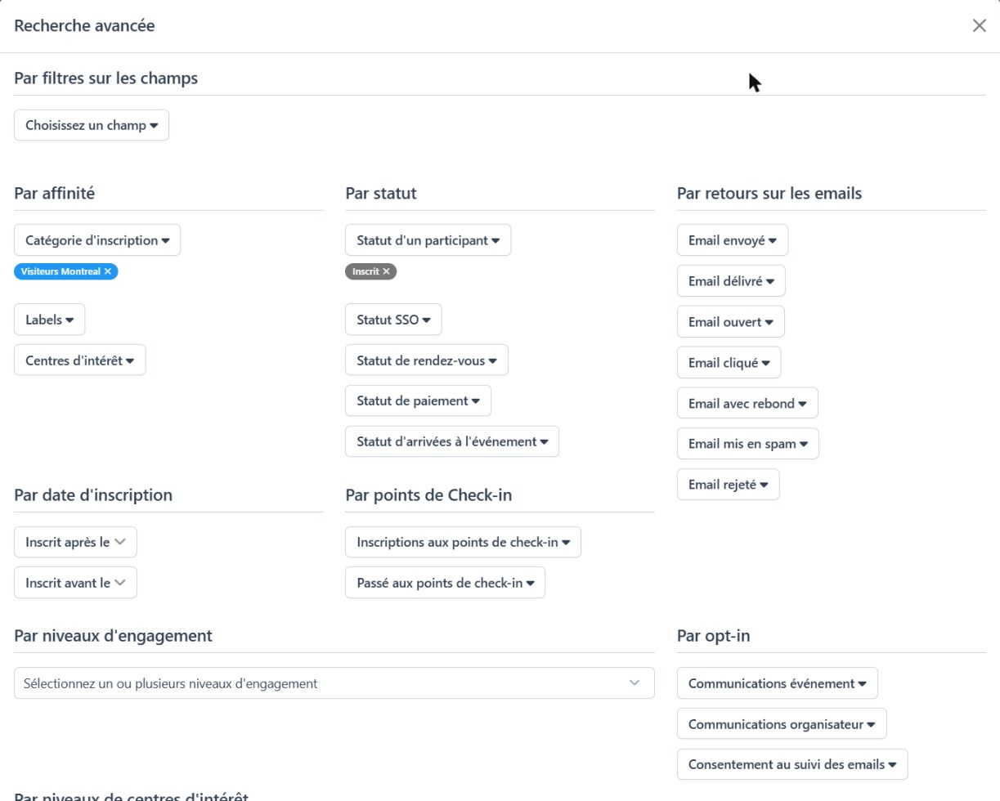
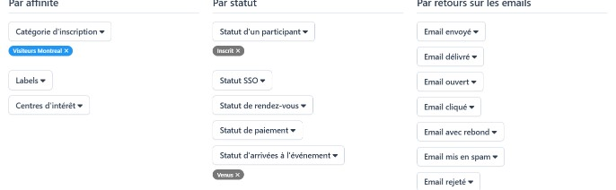
Captures d'Eventmaker, 16 novembre 2026.
Montréal : mêmes filtres, deux années
2025 · visiteurs inscrits
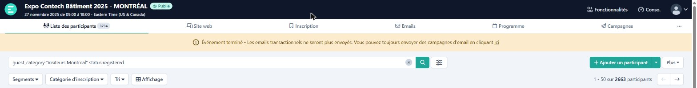
2026 · visiteurs inscrits
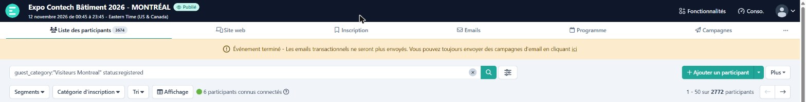
2025 · visiteurs présents
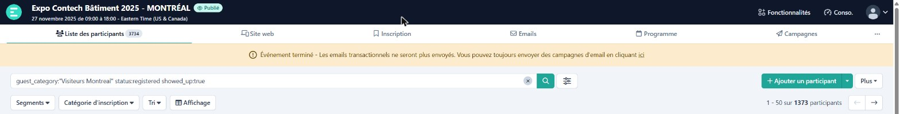
2026 · visiteurs présents
Le total est en haut à droite de chaque capture. Les totaux peuvent bouger d'une ou deux personnes d'une journée à l'autre (inscription annulée ou corrigée après coup).
Qui a été scanné à l'entrée, Montréal
| Catégorie | 2025 | 2026 |
|---|---|---|
| Visiteurs | 1 373 | 1 467 |
| Étudiants | 206 | 197 |
| Représentants d'exposants | 394 | 211 |
| Exposants (responsables) | 109 | 60 |
| Toutes catégories | 2 127 | 1 977 |
Même filtre « Venus », une catégorie à la fois. « Toutes catégories » inclut aussi les conférenciers, l'équipe et les autres catégories.
Ce que ça veut dire
- Les étudiants n'ont jamais été comptés dans les visiteurs, ni en 2025 ni en 2026. La comparaison est faite à critères égaux.
- « Présent » = badge scanné. Une personne qui entre sans être scannée n'est pas comptée. Si une centaine de personnes sont passées sans scan, elles ne sont pas dans le 1 467.
- Le vrai écart est du côté des exposants. Il y a eu 232 scans de moins chez les exposants et leurs représentants, alors que les visiteurs ont augmenté de 94. Les badges d'exposants ont probablement été moins scannés en 2026. Le plancher était donc plus plein que ce que montre le total.
- Pour 2027 : scanner chaque badge, exposants compris, et compter les entrées à la porte (compteur manuel ou caméra) pour avoir un deuxième chiffre à comparer.
Les autres chiffres du bilan, et où les retrouver
| Chiffre | Source | Comment le retrouver |
|---|---|---|
| Inscrits et présents, Québec | Eventmaker | Mêmes filtres, catégorie « Visiteurs Québec ». |
| Rythme des inscriptions (J-60 au jour J) | Eventmaker | Visiteurs inscrits, comptés par date d'inscription. |
| D'où viennent les inscriptions | Eventmaker (champ « utm_source ») | La source enregistrée avec chaque inscription. Une inscription sans source est classée « Site web ». |
| Ouvertures et clics des infolettres | Dialog Insight | Communications › Campagnes › colonnes « Ouv. » et « Clics ». |
| Coût par inscription, Facebook | Meta Ads Manager | Colonne « Registrations completed », par campagne. |
| Résultats LinkedIn | LinkedIn Campaign Manager | Groupe de campagnes « Expos Contech 2026 ». |
Facebook déclare plus d'inscriptions (426 à Montréal) que ce qu'Eventmaker lui attribue (384). Facebook compte aussi les gens qui ont vu la pub, puis sont revenus par Google ou par une infolettre. Les deux chiffres sont vrais, ils ne mesurent pas la même chose.
Tous les scénarios : « et si on compte aussi… ? »
Selon qui on compte, on n'obtient pas le même chiffre. Voici toutes les façons de compter, avec les mêmes règles pour 2025 et 2026. Comme ça, peu importe le filtre que quelqu'un met dans Eventmaker, il retrouve son chiffre ici.
En résumé : imagine une fête. Les inscrits, ce sont les gens qui ont dit « je viens ». Les présents, ce sont ceux dont on a scanné le billet à la porte. On peut compter seulement les invités (A), ou les invités + leurs amis étudiants (B), ou aussi les gens qui font un discours (C), ou carrément tout le monde dans la salle, même ceux qui tiennent les kiosques (D).
Montréal
| Inscrits | 2025 | 2026 | Écart |
|---|---|---|---|
| A · Visiteurs seulement 👤 C'est le chiffre officiel du bilan. Les gens du métier qui viennent visiter. | 2 663 | 2 772 | +109 (+4 %) |
| B · Visiteurs + étudiants 👤 🎓 On ajoute les étudiants des écoles. | 2 922 | 2 990 | +68 (+2 %) |
| C · Tout le public 👤 🎓 🎤 Visiteurs, étudiants et conférenciers. | 2 969 | 3 045 | +76 (+3 %) |
| D · Tout le monde dans la salle 👤 🎓 🎤 🏢 On ajoute les exposants, leurs représentants et l'équipe Contech. | 3 734 | 3 674 | −60 (−2 %) |
| Présents (badge scanné) | 2025 | 2026 | Écart |
|---|---|---|---|
| A · Visiteurs seulement 👤 C'est le chiffre officiel du bilan. Les gens du métier qui viennent visiter. | 1 373 | 1 467 | +94 (+7 %) |
| B · Visiteurs + étudiants 👤 🎓 On ajoute les étudiants des écoles. | 1 579 | 1 664 | +85 (+5 %) |
| C · Tout le public 👤 🎓 🎤 Visiteurs, étudiants et conférenciers. | 1 612 | 1 703 | +91 (+6 %) |
| D · Tout le monde dans la salle 👤 🎓 🎤 🏢 On ajoute les exposants, leurs représentants et l'équipe Contech. | 2 127 | 1 977 | −150 (−7 %) |
Québec
| Inscrits | 2025 | 2026 | Écart |
|---|---|---|---|
| A · Visiteurs seulement 👤 C'est le chiffre officiel du bilan. Les gens du métier qui viennent visiter. | 908 | 1 264 | +356 (+39 %) |
| B · Visiteurs + étudiants 👤 🎓 On ajoute les étudiants des écoles. | 908 | 1 314 | +406 (+45 %) |
| C · Tout le public 👤 🎓 🎤 Visiteurs, étudiants et conférenciers. | 939 | 1 341 | +402 (+43 %) |
| D · Tout le monde dans la salle 👤 🎓 🎤 🏢 On ajoute les exposants, leurs représentants et l'équipe Contech. | 1 294 | 1 693 | +399 (+31 %) |
| Présents (badge scanné) | 2025 | 2026 | Écart |
|---|---|---|---|
| A · Visiteurs seulement 👤 C'est le chiffre officiel du bilan. Les gens du métier qui viennent visiter. | 518 | 596 | +78 (+15 %) |
| B · Visiteurs + étudiants 👤 🎓 On ajoute les étudiants des écoles. | 518 | 606 | +88 (+17 %) |
| C · Tout le public 👤 🎓 🎤 Visiteurs, étudiants et conférenciers. | 536 | 623 | +87 (+16 %) |
| D · Tout le monde dans la salle 👤 🎓 🎤 🏢 On ajoute les exposants, leurs représentants et l'équipe Contech. | 744 | 655 | −89 (−12 %) |
Ce qu'il faut retenir :
- A, B et C montent tous, à Québec comme à Montréal. Peu importe si on compte les étudiants ou non, il y a eu plus de visiteurs en 2026.
- Seul le D « présents » baisse, parce que les badges des exposants n'ont presque pas été scannés en 2026. À Québec : 30 exposants et représentants scannés sur 320 inscrits, contre 200 sur 338 en 2025. Leurs kiosques étaient montés, mais leurs badges n'ont pas été comptés à la porte.
- Le chiffre à utiliser pour comparer, c'est A : c'est ce qu'on fait depuis toujours et ça ne dépend pas du scan des exposants.
Source : Eventmaker, inscriptions au statut « Inscrit » (annulations exclues), par catégorie d'inscription, relevé du 16 nov. 2026. Pas d'étudiants à Québec en 2025 : la catégorie n'existait pas.
Questions fréquentes
Si je refais le calcul moi-même, est-ce que je vais avoir le même chiffre?
Oui, en suivant les 6 étapes de cette page dans Eventmaker. Si vous obtenez un chiffre différent, c'est presque toujours un filtre différent : regardez le tableau des scénarios (A, B, C, D) pour retrouver le vôtre.
Pourquoi ne pas utiliser le total de tout le monde (scénario D)?
Parce qu'il dépend du scan des badges des exposants, qui n'a pas été fait de la même façon d'une année à l'autre. Le chiffre des visiteurs (A) est celui qu'on utilise depuis toujours pour comparer.
C'est quoi « présent », exactement?
Une personne dont le badge a été scanné à l'entrée (Eventmaker la marque « Venue »). Quelqu'un qui entre sans être scanné n'est pas compté.
Et Google Analytics?
Les sites d'inscription de Québec et de Montréal envoient leurs visites à un compte Google Analytics géré par l'équipe de développement d'Événements Les Affaires. Aucun compte Google du marketing n'y a accès : l'accès en lecture a été demandé le 16 oct. et n'a pas encore été donné. Les chiffres de ce bilan viennent donc d'Eventmaker, qui enregistre la source de chaque inscription une seule fois. Pour 2027, l'accès est prévu dans la planification (carte aux développeurs à J-95).
2025 vs 2026 · mêmes filtres, mêmes sources
Qu'est-ce qui a changé dans notre marketing?
Dans cet onglet : Ce qui a changé · Pourquoi tant d’inscrits « Site web »
Ce qui a changé entre 2025 et 2026
Entre 2025 et 2026, trois choses ont changé dans notre façon de faire, et elles expliquent l'essentiel des résultats :
- On a ajouté de la pub payée. En 2025, aucun dollar de pub Facebook n'est allé aux Expos. En 2026, 14 878 $ (Facebook/Instagram) et 646 $ US (LinkedIn) ont amené 624 visiteurs inscrits, dont 188 sont venus.
- Les infolettres ont moins rapporté. Les inscriptions venues des infolettres ont baissé de 1 619 à 1 078 (−33 %), et l'ouverture moyenne est passée d'environ 36 % à 31 %. C'est la même tendance que la baisse des courriels Formations analysée en septembre.
- Les invitations personnelles de l'équipe ont presque disparu. À Montréal, 94 visiteurs inscrits en 2025 venaient d'un courriel personnel d'un membre de l'équipe (et 79 % sont venus). En 2026, ils sont 29.
En résumé : on a « acheté » de nouveaux visiteurs avec la pub, mais on en a perdu presque autant du côté des infolettres et des invitations personnelles. Au total, on reste en hausse : +94 présents à Montréal, +78 à Québec. Est-ce l'économie ou nous? Pour les Expos, l'entrée est gratuite et les inscriptions sans étiquette (site, Google, bouche-à-oreille) ont monté. La baisse est donc concentrée sur nos canaux à nous, surtout les infolettres. C'est un levier sur lequel on peut agir.
D'où venaient les visiteurs présents, 2025 vs 2026
Visiteurs présents (badge scanné), par source enregistrée dans Eventmaker. Même catégorie « Visiteurs », mêmes règles de regroupement pour les deux années.
| Source | MTL 2025 | MTL 2026 | Écart | QC 2025 | QC 2026 | Écart |
|---|---|---|---|---|---|---|
| Site web, Google, direct (sans étiquette) | 739 | 886 | +147 | 305 | 354 | +49 |
| Infolettres (Dialog Insight) | 529 | 365 | −164 | 202 | 168 | −34 |
| Pubs et page Facebook | 1 | 124 | +123 | 0 | 64 | +64 |
| Invitations personnelles de l'équipe | 74 | 20 | −54 | 1 | 1 | 0 |
| Courriels envoyés par Eventmaker | 0 | 33 | +33 | 0 | 1 | +1 |
| ChatGPT et autres IA | 8 | 22 | +14 | 1 | 2 | +1 |
| 0 | 4 | +4 | 0 | 2 | +2 | |
| Autres | 22 | 13 | −9 | 9 | 4 | −5 |
| Total visiteurs présents | 1 373 | 1 467 | +94 | 518 | 596 | +78 |
Inscrits par source (même règle)
| Source | MTL 25 → 26 | QC 25 → 26 |
|---|---|---|
| Sans étiquette | 1 311 → 1 442 | 464 → 688 |
| Infolettres | 1 200 → 763 | 419 → 315 |
| 1 → 384 | 0 → 240 | |
| Invitations de l'équipe | 94 → 29 | 1 → 2 |
| Total | 2 663 → 2 772 | 908 → 1 264 |
Combien d'inscrits viennent vraiment, selon la source
| Source (2026, deux Expos) | Présence |
|---|---|
| Invitations personnelles de l'équipe (2025, MTL) | 79 % |
| Sans étiquette (site, Google, direct) | 58 % |
| Infolettres | 49 % |
| 30 % |
Plus la personne a été invitée personnellement, plus elle vient.
Source : Eventmaker, champ « utm_source » de chaque inscription, catégorie « Visiteurs », statut « Inscrit » (et « Venus » pour les présents). Relevé du 16 nov. 2026. Les infolettres regroupent « newsletter », « dialog_insight », « infolettre » et « hs_email ». La partie Québec compte 318 inscrits venus des infolettres (et non 315) parce que 3 inscriptions à l'étiquette ambiguë y sont rangées autrement; le total de 1 264 ne change pas.
Les dépenses, côte à côte
| Poste | 2025 | 2026 | Ce que ça a donné en 2026 |
|---|---|---|---|
| Pubs Facebook / Instagram (Expos) | 0 $ | 14 878 $ | 624 inscrits et 188 présents attribués par Eventmaker · ≈ 24 $ par inscrit, ≈ 79 $ par visiteur présent |
| Pubs LinkedIn (Expos) | 0 $ | 646 $ US | 22 inscrits, 6 présents |
| Infolettres Expos (septembre à novembre) | 13 envois | 19 envois, dont 6 ciblés | Ouverture ≈ 36 % → ≈ 31 % · clics ≈ 3,6 % → ≈ 1,7 % (envois à toute la liste) |
Le coût par présent compte seulement les gens qu'Eventmaker attribue à Facebook. Facebook en déclare davantage (829 inscriptions), parce qu'il compte aussi ceux qui ont vu la pub puis sont revenus autrement. Le vrai coût par présent est donc entre ≈ 59 $ et ≈ 79 $.
Capture · Meta Ads Manager, août à novembre 2025
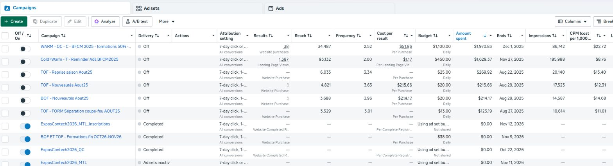
Les campagnes payées de l'automne 2025 visaient les Formations (vendredi fou, rentrée). Les campagnes « ExposContech2026 » n'ont rien dépensé en 2025.
Capture · Dialog Insight, infolettres « PUSH » 2025
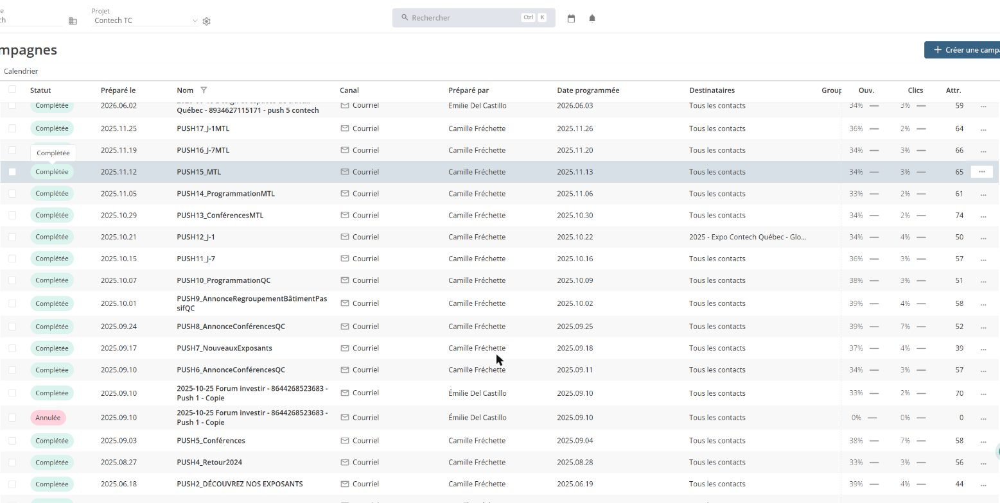
Ouvertures de 33 à 39 % et clics de 2 à 7 % en 2025. En 2026, les envois à toute la liste se tiennent entre 29 et 33 %.
Facebook non payé : ce qu'on publiait en 2025
Publications Expos
17 → 48
septembre à novembre, 2025 vs 2026
Vues au total
10 340 → 26 051
≈ 608 → ≈ 543 vues par publication
Réactions par publication
5,8 → 3,0
98 → 142 réactions au total
Partages
19 → 26
clics sur le lien : 20 → 82
En résumé : en 2026, on a publié presque trois fois plus. On a eu plus de vues et quatre fois plus de clics au total, mais chaque publication, prise seule, a fait un peu moins réagir. En 2025, les publications qui ont le mieux marché montraient la foule sur place (« C'est un départ », 14 réactions) et le rappel de la veille (2 314 vues). C'est cohérent avec 2026 : les gens réagissent aux personnes.

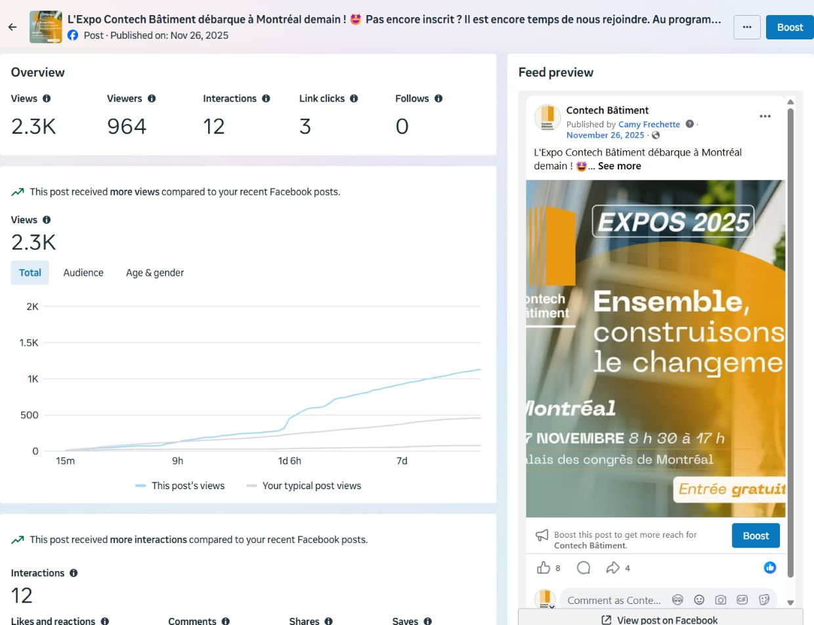

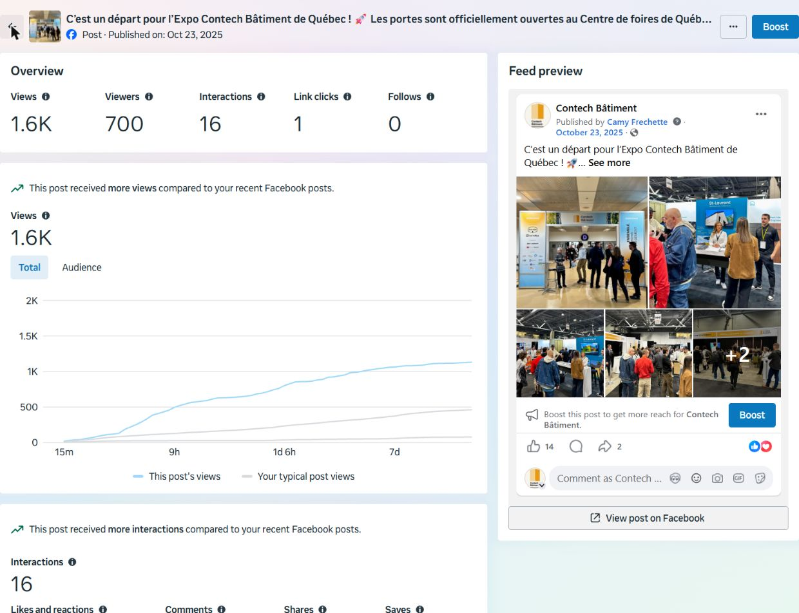

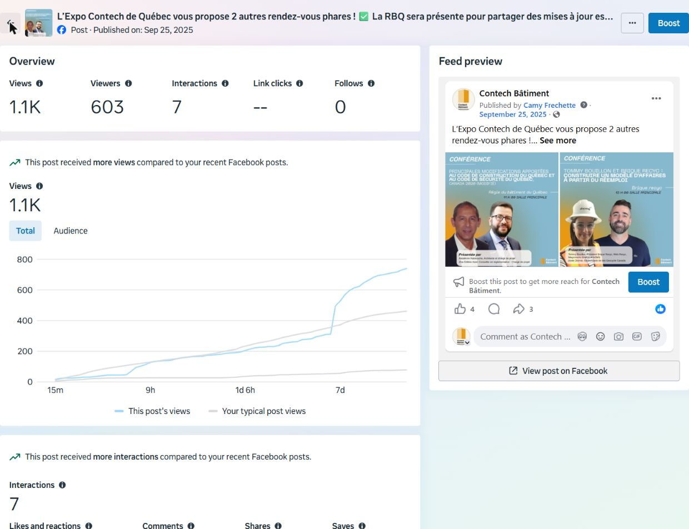

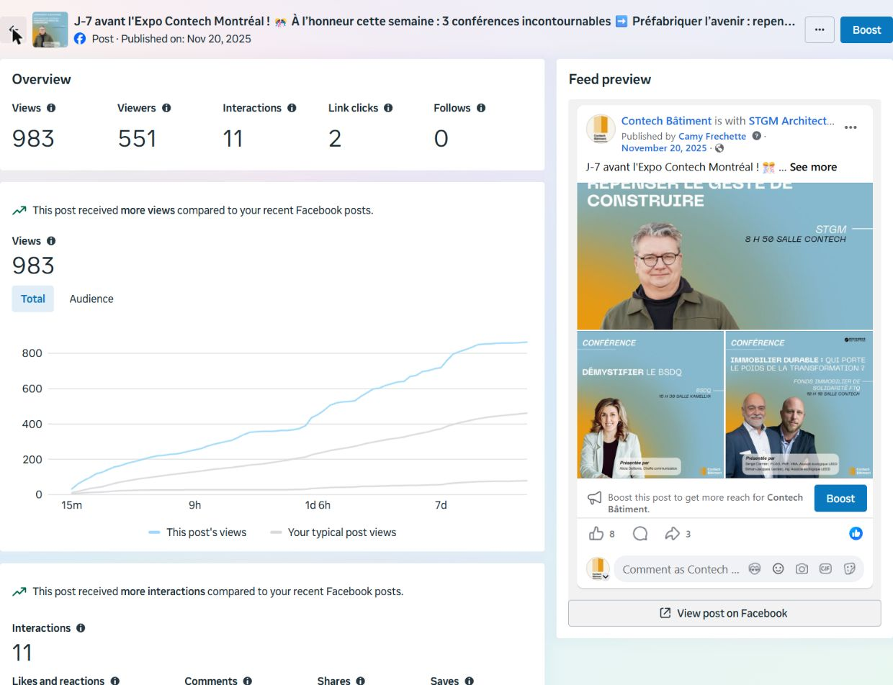

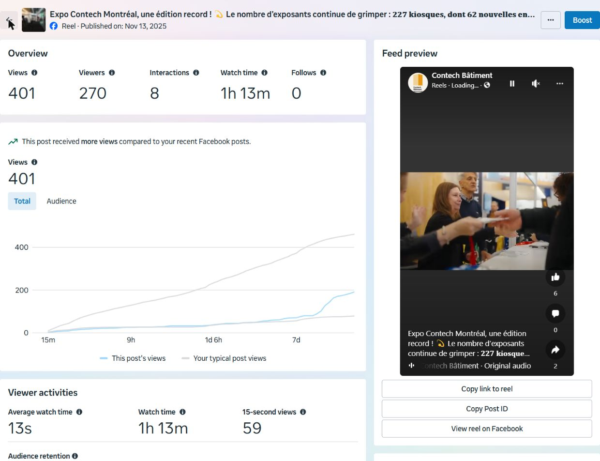
Source : Meta Business Suite › Contenu › Publications, période du 1er sept. au 30 nov. 2025, publications qui parlent des Expos (les Formations et le vendredi fou sont exclus). Captures de la page « Statistiques de la publication », 16 nov. 2026. LinkedIn 2025 : LinkedIn ne garde les statistiques et la liste des publications de la page que sur 12 mois ; les publications Expos de l'automne 2025 ne sont plus consultables, la comparaison LinkedIn est donc impossible.
Ce qui marchait en 2025 et qu'on a perdu
- Les infolettres à toute la liste ouvraient à ≈ 36 % et faisaient 3,6 % de clics. C'était le 1er moteur après le site (1 619 inscrits).
- Les invitations personnelles de l'équipe : 94 inscrits à Montréal, dont 79 % sont venus. C'est la meilleure présence de toutes les sources.
- Cinq semaines entre Québec et Montréal, contre trois en 2026 : Montréal avait sa propre campagne, au lieu de chevaucher celle de Québec.
Ce qu'on a ajouté en 2026 et qui a marché
- La pub payée : 624 inscrits et 188 présents qui n'existaient pas en 2025.
- Les envois ciblés : 55 % d'ouverture chez les inscrits, 36 % chez les architectes.
- Les courriels envoyés par Eventmaker : 64 inscriptions à Montréal, dont 33 présents.
- Les entrevues vidéo, qui font le plus réagir.
Ce que ça veut dire pour 2027
- Garder la pub, mais la mesurer au visiteur présent (≈ 59 à 79 $), pas seulement à l'inscription. La jumeler à des rappels pour faire monter la présence de 30 %.
- Relancer les infolettres par la pertinence : segmenter par métier, objets plus directs, moins d'envois à toute la liste. C'est le même chantier que pour les Formations.
- Ramener les invitations personnelles : un lien personnalisé et un texte prêt à envoyer pour chaque membre de l'équipe, chaque exposant et chaque conférencier. C'est la source qui amène les visiteurs les plus fidèles.
- Mesurer avec les bons outils : un seul tableau de bord par source (inscrits, présents, coût par présent), mis à jour chaque semaine.
Questions fréquentes
Est-ce que la baisse des infolettres vient de l'économie?
Pas pour les Expos : l'entrée est gratuite, et les inscriptions sans étiquette (site, Google, bouche-à-oreille) ont monté (+131 à Montréal, +224 à Québec). La baisse est concentrée sur les infolettres, qui ouvrent moins (≈ 36 % → ≈ 31 %) et font moins cliquer (≈ 3,6 % → ≈ 1,7 %). C'est la même tendance que l'analyse des courriels Formations de septembre.
Sans la pub, est-ce qu'on aurait reculé?
On ne peut pas le prouver, parce que certains inscrits venus de la pub se seraient peut-être inscrits autrement. Ce qu'on sait : la pub a amené 188 présents de plus, et les infolettres et les invitations de l'équipe en ont amené 218 de moins qu'en 2025, toutes Expos confondues.
Combien coûte un visiteur présent venu de la pub?
Entre ≈ 59 $ et ≈ 79 $. Le chiffre bas utilise les inscriptions déclarées par Facebook (829); le chiffre haut, seulement celles qu'Eventmaker attribue à Facebook (624). Dans les deux cas, environ 30 % des inscrits venus de la pub sont venus.
Pourquoi les invitations de l'équipe ont baissé?
En 2025, des membres de l'équipe envoyaient des invitations personnelles avec leur propre lien (94 inscrits à Montréal). En 2026, ces envois ont été beaucoup moins nombreux (29). Comme 79 % de ces invités viennent, c'est la première chose à ramener pour 2027.
Est-ce que je peux refaire ces chiffres?
Oui. Dans Eventmaker, même recherche que dans « D'où viennent les chiffres », puis exporter et regrouper la colonne « utm_source ». Pour la pub 2025 : Meta Ads Manager, période août à novembre 2025, colonne « Montant dépensé ». Pour les infolettres : Dialog Insight › Campagnes, recherche « PUSH ».
D'où viennent les inscrits · liens de suivi
Pourquoi tant d'inscrits « Site web »?
Ce que veut dire « Site web »
« Site web », c'est toute inscription qui arrive sans étiquette de provenance (les « UTM » ajoutés au lien). À Montréal, 1 430 inscrits sur 2 772 sont dans ce cas. Ce n'est pas une erreur d'Eventmaker : l'étiquette se perd en chemin, pour quatre raisons.
Les 4 raisons
- Les liens qui menaient à l'accueil du site, pas au formulaire. Quand quelqu'un arrive sur montreal.expocontech.ca avec une étiquette Facebook, puis clique « Inscription », le site ne transmet pas l'étiquette au formulaire. L'inscription est comptée « Site web ». Vérifié le 16 nov. : le bouton « Inscription visiteur » de l'accueil mène au formulaire sans étiquette. Exemple : la vidéo du 27 sept. et la publication du 30 sept. (bit.ly/46KyyOI).
- Google et les visites directes. Quelqu'un qui cherche « Expo Contech » sur Google ou qui tape l'adresse n'a pas d'étiquette. Aucune campagne Google Ads n'a roulé pour les Expos (voir plus bas).
- Ceux qui voient une pub, puis reviennent plus tard par Google ou en tapant l'adresse. Facebook les compte, Eventmaker non. C'est pourquoi Facebook déclare 426 inscriptions et Eventmaker lui en attribue 384.
- Le suivi des inscriptions Facebook à Montréal n'a pas fonctionné du 1er au 15 octobre (0 inscription comptée, contre 261 à Québec). Correction demandée aux développeurs le 16 octobre ; la campagne a visé l'inscription à partir du 27 octobre. D'ici là, Facebook ne pouvait pas optimiser sur l'inscription.
Deux façons d'écrire la même campagne
Les liens Facebook de Montréal portent deux noms de campagne différents :
| Étiquette « campaign » | Utilisée pour |
|---|---|
ExposContech2026MTL | Publications planifiées (P18 à P28, RL03 à RL08) |
expo_mtl_2026 | Publications de novembre, LinkedIn, signatures |
Les deux sont bien comptées « Facebook » dans le bilan, mais un rapport filtré sur un seul nom en manque la moitié.
Ce qu'on corrige pour 2027
- Chaque lien pointe directement vers le formulaire d'inscription, jamais vers l'accueil.
- Une seule nomenclature (le Google Sheet « UTM_nomenclature uniformisée »), vérifiée avant chaque publication.
- Demander aux développeurs que le site garde l'étiquette jusqu'au formulaire (demande à l'équipe web).
- Tester le suivi des inscriptions Facebook et LinkedIn avant de lancer les pubs.
Google Ads
Aucune campagne Google Ads n’a roulé pour les Expos en 2026. Les inscriptions « Site web » ne viennent donc pas de Google Ads.
Vérification des liens de suivi (Bitly et étiquettes)
Pour savoir d'où viennent les inscrits, chaque lien doit porter une étiquette de provenance (« UTM ») et mener directement au formulaire. J'ai vérifié les liens Bitly des Expos (45 créés depuis octobre, plus les plus cliqués de septembre) et les étiquettes reçues par Eventmaker. Relevé du 16 nov.
| Ce que j'ai trouvé | Exemple | Ce que ça change | Correctif 2027 |
|---|---|---|---|
| 5 liens menaient à l'accueil du site, pas au formulaire | bit.ly/46KyyOI (vidéo Facebook du 27 sept., 20 clics), et 4 liens des publications du 27 oct. au 9 nov. | L'étiquette se perd au clic sur « Inscription » : l'inscrit est compté « Site web ». | Chaque lien pointe vers le formulaire d'inscription. |
| Trois façons d'écrire la même campagne | « ExposContech2026MTL », « expo_mtl_2026 » et « rs_08_11_26 » | Les résultats d'une même campagne sont éparpillés sur plusieurs lignes. | Une seule nomenclature, vérifiée avant chaque publication. |
| La pub Facebook et les publications gratuites portent la même étiquette | facebook / social / ExposContech2026MTL : 313 inscrits à Montréal | On ne peut pas séparer exactement ce qu'a donné la pub payée de ce qu'ont donné les publications gratuites. Les liens Bitly des publications gratuites ont eu peu de clics (moins de 12 chacun), donc l'écart est petit. | Pub = « paid_social », publication gratuite = « social ». |
| Une étiquette de Québec dans un envoi de Montréal | infolettre / email / ExposContech2026QC : 16 inscrits à Montréal | 16 inscrits de Montréal rangés sous une campagne de Québec. | Tester chaque lien d'infolettre avant l'envoi. |
| Cinq noms pour les infolettres | newsletter, infolettre, dialog_insight, eventmaker, courriel_perso | Il faut additionner à la main pour avoir le total des courriels. | « newsletter » pour Dialog Insight, « eventmaker » pour les courriels aux inscrits. |
Ce que Bitly a compté (clics sur les liens Expos) : vidéo LinkedIn de Québec 33 clics · bannière de l'OAQ 23 clics (2 inscrits, 0 venu) · vidéo Facebook du 27 sept. 20 clics · stories Québec 12 clics · chaque publication du calendrier : moins de 12 clics. Les sondages : 429 clics sur le lien du sondage des visiteurs de Montréal pour 186 réponses (43 % ont terminé).
Le quota Bitly a été atteint en octobre. Décision du 27 oct. avec Lita et Les Affaires : liens avec étiquettes classiques, sans Bitly payant. Sources : Bitly (groupe evenementscontech, 75 derniers jours), Eventmaker (champs utm_source, utm_medium, utm_campaign des inscrits).
Questions fréquentes
Pourquoi autant d'inscriptions « Site web »?
Parce que c'est la case pour toute inscription arrivée sans étiquette de provenance : visites directes, recherches Google, inscriptions faites sur place le jour même, et les liens qui menaient à l'accueil du site (l'étiquette se perd avant le formulaire). Ce n'est pas un bogue d'Eventmaker.
Est-ce que ça vient de la campagne de Hamak?
Non. Hamak gère seulement les campagnes des formations; aucune campagne Google n'a roulé pour les Expos. La perte d'étiquette vient surtout des liens vers l'accueil du site et du suivi Facebook de Montréal réparé tard.
Est-ce que ça se règle pour 2027?
Oui : tous les liens vont directement au formulaire, une seule façon d'écrire les étiquettes, le site garde l'étiquette jusqu'au formulaire (demande aux développeurs), et on teste le suivi avant de lancer les pubs.
Ce qu'on a fait
Les actions marketing 2026
Dans cet onglet : Créatifs, pubs et partenaires · Chronologie détaillée, qui a fait quoi · Les deux jours d’Expo, heure par heure · Ce qui a accroché, qui a fait quoi
Campagnes Meta
3
Québec (inscription), Montréal (trafic, puis inscription dès le 27 oct.)
Impressions LinkedIn
12 792
416 clics · reciblage et boost seulement
Infolettres Expo
19
envois à environ 19 000 contacts, dont des envois ciblés par métier
Publications RS en octobre
36
contre 11 par mois en moyenne de janvier à juin
Les créatifs qui ont roulé
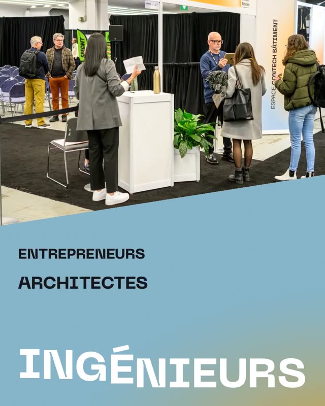
Vidéo 4:5 avec voix · 45 inscriptions
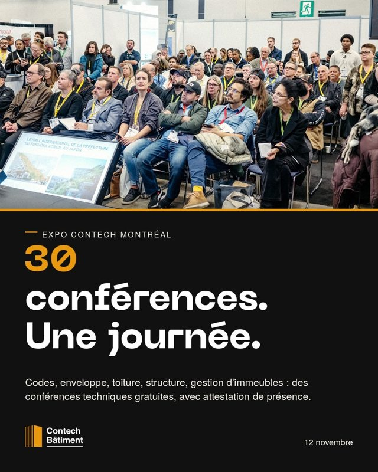
Carrousel (4 visuels) · 13 inscriptions
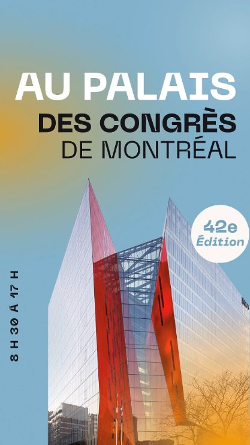
Vidéo 9:16 (14 s) · 26 inscriptions
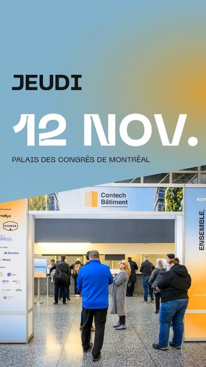
Vidéo 9:16 (24 s) · 1 inscriptions
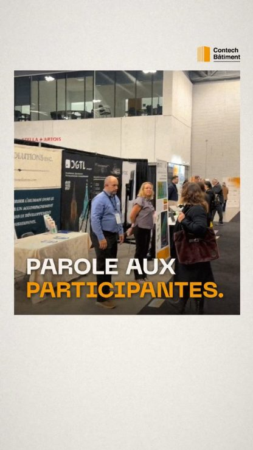
Carrousel vidéo
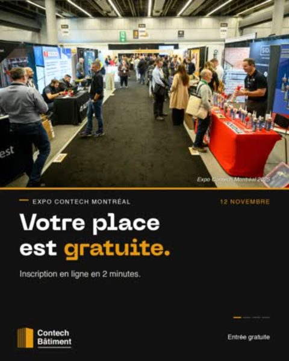
Vidéo 4:5
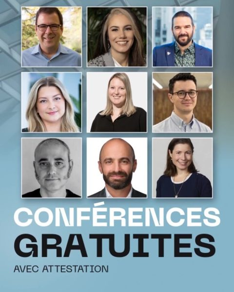
Vidéo 4:5
Vidéos et visuels : SharePoint › Expos contech › 2026 › 04 - VISUELS › RÉSEAUX SOCIAUX ↗.
Les pubs LinkedIn, telles qu'elles ont été vues
LinkedIn a servi seulement au reciblage (gens déjà passés sur le site sans s'inscrire), selon la règle de la direction. Six phases, 15 pubs, dont 9 ont dépensé. Total : 645,86 $ US, 416 clics, 12 792 affichages, 2 inscriptions suivies par LinkedIn et 22 inscriptions étiquetées LinkedIn dans Eventmaker (6 sont venus).
Capture · Campaign Manager, les 6 phases

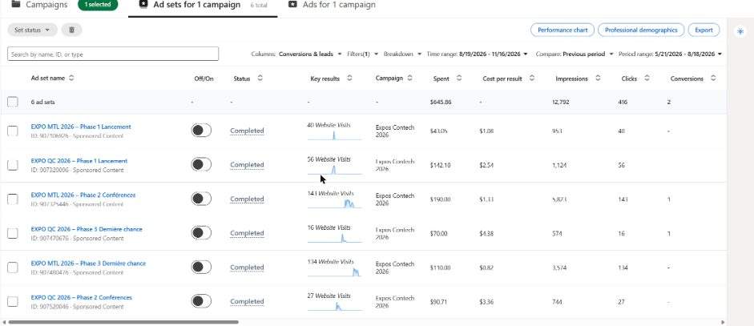
Capture · Campaign Manager, les pubs (1/2)

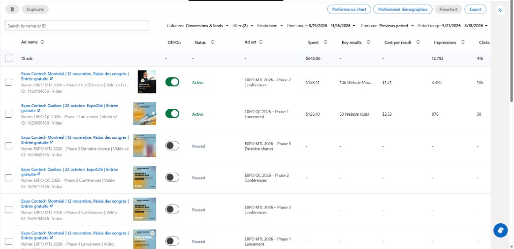
Capture · Campaign Manager, les pubs (2/2)

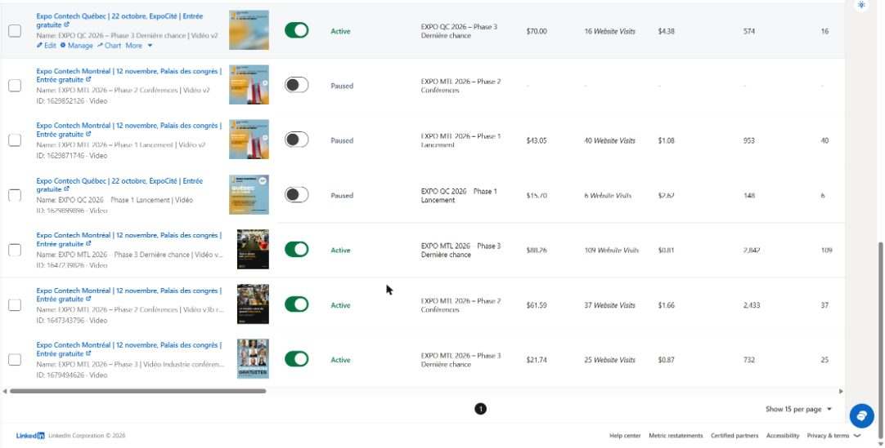
Cliquez sur une pub pour la voir sur LinkedIn : la vidéo joue et les réactions sont à jour. Les chiffres sous le titre viennent de Campaign Manager.
Montréal · phase 3 « Dernière chance » · pub LinkedIn
Vidéo « Votre place est gratuite »
88,26 $ US dépensés · 109 clics vers le site · 0,81 $ US par clic · 2 842 affichages
▶ Voir la pub sur LinkedIn (vidéo, réactions à jour) ↗ · Agrandir la capture

Montréal · phase 2 « Conférences » · pub LinkedIn
Vidéo « Apprenez des gens du métier »
128,41 $ US dépensés · 106 clics vers le site · 1,21 $ US par clic · 3 390 affichages
▶ Voir la pub sur LinkedIn (vidéo, réactions à jour) ↗ · Agrandir la capture

Québec · phase 1 « Lancement » · pub LinkedIn
Vidéo ExpoCité (visuel du graphiste externe)
126,40 $ US dépensés · 50 clics vers le site · 2,53 $ US par clic · 976 affichages
▶ Voir la pub sur LinkedIn (vidéo, réactions à jour) ↗ · Agrandir la capture

Montréal · phase 1 « Lancement » · pub LinkedIn
Vidéo Palais des congrès (visuel du graphiste externe)
43,05 $ US dépensés · 40 clics vers le site · 1,08 $ US par clic · 953 affichages
▶ Voir la pub sur LinkedIn (vidéo, réactions à jour) ↗ · Agrandir la capture

Montréal · phase 2 « Conférences » · pub LinkedIn
Vidéo « Le rendez-vous du grand bâtiment »
61,59 $ US dépensés · 37 clics vers le site · 1,66 $ US par clic · 2 433 affichages
▶ Voir la pub sur LinkedIn (vidéo, réactions à jour) ↗ · Agrandir la capture

Québec · phase 2 « Conférences » · pub LinkedIn
Vidéo ExpoCité, texte conférences
90,71 $ US dépensés · 27 clics vers le site · 3,36 $ US par clic · 744 affichages
▶ Voir la pub sur LinkedIn (vidéo, réactions à jour) ↗ · Agrandir la capture

Montréal · phase 3 « Dernière chance » · pub LinkedIn
Vidéo « Industrie » (conférenciers)
21,74 $ US dépensés · 25 clics vers le site · 0,87 $ US par clic · 732 affichages
▶ Voir la pub sur LinkedIn (vidéo, réactions à jour) ↗ · Agrandir la capture

Québec · phase 3 « Dernière chance » · pub LinkedIn
Vidéo J-7 Québec
70,00 $ US dépensés · 16 clics vers le site · 4,38 $ US par clic · 574 affichages
▶ Voir la pub sur LinkedIn (vidéo, réactions à jour) ↗ · Agrandir la capture

Source : LinkedIn Campaign Manager, compte Contech Bâtiment, campagne « Expos Contech 2026 », 19 août au 16 nov. 2026. Montants en dollars américains. La pub « QC phase 1 » (vidéo de base, 15,70 $ US, 6 clics) n'est pas montrée. Les 6 pubs restées en pause n'ont rien dépensé.
Ce qu'on en retient : les vidéos avec de vraies personnes de l'Expo (« Votre place est gratuite », « Apprenez des gens du métier ») ont eu les clics les moins chers (0,81 à 1,21 $ US). Mais les clics LinkedIn se sont peu transformés en inscriptions. D'où la recommandation de mettre ce budget sur les publications des conférenciers (voir les recommandations 2027).
Les infolettres Expo, envoi par envoi
| Envoi | Public | Contacts | Ouverture | Clics |
|---|---|---|---|---|
| Focus Québec (PUSH 5 et 6) | Tous les contacts | 19 339 | 30 % | 2 % |
| Focus commandite QC-MTL (PUSH 7) | Tous les contacts | 19 225 | 33 % | 2 % |
| Zones de l'Expo (1er oct.) | Tous les contacts | 19 167 | 30 % | 1 % |
| Ouverture et fermeture (8 oct.) | Tous les contacts | 19 128 | 30 % | 2 % |
| Veille de Québec (21 oct.) | Tous les contacts | 19 081 | 30 % | 1 % |
| Montréal J-16 (27 oct.) | Tous les contacts | 19 034 | 30 % | 2 % |
| Montréal J-14 (29 oct.) | Tous les contacts | 19 950 | 33 % | 2 % |
| Montréal J-10 (2 nov.) | Non-inscrits | 19 077 | 32 % | 2 % |
| Montréal J-7 (5 nov.) | Non-inscrits | 18 697 | 30 % | 1 % |
| Montréal J-6 (6 nov.) | Inscrits seulement | 1 138 | 55 % | 12 % |
| Montréal J-3 (9 nov.) | Non-inscrits | 18 669 | 30 % | 1 % |
| Relance grandes entreprises (10 nov.) | Liste ciblée | 318 | 35 % | 3 % |
| J-2 · Architectes et conception | Ciblé par métier | 2 558 | 36 % | 1 % |
| J-2 · Entrepreneurs | Ciblé par métier | 3 307 | 33 % | 1 % |
| J-2 · Gestionnaires immobiliers | Ciblé par métier | 780 | 29 % | 2 % |
| J-2 · Autres professionnels | Ciblé par métier | 11 999 | 26 % | 1 % |
Source : Dialog Insight. Le taux d'ouverture est surestimé par la protection de la confidentialité d'Apple Mail ; il sert surtout à comparer les envois entre eux.
Partenaires et médias
19 associations et médias au plan marketing, en achat ou en échange de visibilité : OAQ, OIQ, AAPPQ, ACQ, APCHQ, CECOBOIS, BSDQ, AVFQ, AERMQ, AMCQ, APDIQ, BDQ, DCC, AluQuébec, ASF, CEBQ, Bâtiment Passif Québec, ELLES, Vivre en Ville (Voir vert et Constructo). Bannières, infolettres, contenu rédactionnel et publications partagées.
Le suivi en direct (ContexHub)
Tableau de bord mis à jour à partir d'Eventmaker, partagé à l'équipe pendant la campagne : inscriptions par jour, comparaison avec 2025, sources, pubs actives et documents du jour J.
Questions fréquentes
Pourquoi Montréal a-t-il démarré en « visites du site » plutôt qu'en inscriptions ?
Jusqu'au 27 octobre, Meta ne recevait pas les inscriptions de Montréal (problème de suivi sur la page de confirmation). Sans ce signal, on ne pouvait pas demander à Meta de viser l'inscription. Dès que la correction a fonctionné, la campagne « Inscriptions » a été lancée.
Pourquoi transférer le budget de Québec vers Montréal par paliers ?
Une hausse trop brusque du budget relance la période d'apprentissage de Meta et fait monter le coût par inscription. On a donc monté par paliers d'environ 20 %.
Où trouver les vidéos et visuels utilisés ?
Sur SharePoint : Expos contech › 2026 › 04 - VISUELS › RÉSEAUX SOCIAUX ↗.
De juin au 16 novembre 2026 · avec les résultats
Tout ce qui a été fait, dans l'ordre
La chronologie
| Date | Ce qui a été fait | Résultat | Capture (cliquez) |
|---|---|---|---|
| Juin à septembre · on annonce | |||
| 18 juin | Infolettre « Save the date » aux 19 000 contacts | 33 % d'ouverture · 2 % de clics | 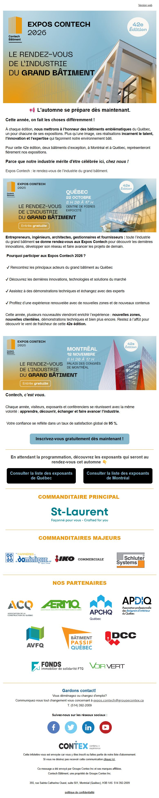 |
| 13 août au 24 sept. | Six infolettres « Focus » (Québec, commandites, zones) | 29 à 33 % d'ouverture · 2 à 3 % de clics | 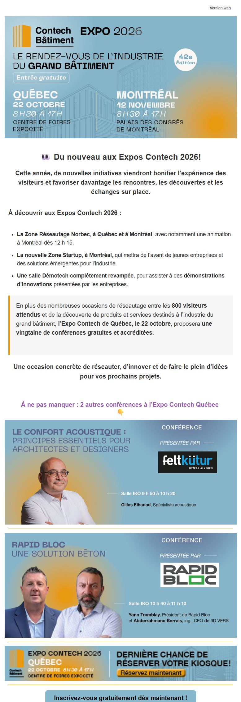 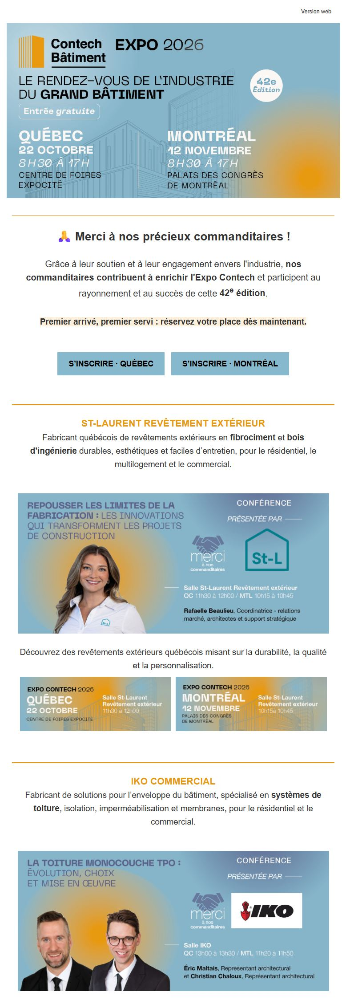 |
| 30 sept. | Point d'équipe : Montréal a 321 inscrits de moins qu'en 2025 au même moment. Décision : pubs Meta et LinkedIn, pub dans le Journal de Québec. | Plan lancé dans la semaine | |
| Octobre · Québec | |||
| 2 oct. | Pub Meta Québec, réglée pour obtenir des inscriptions. LinkedIn en reciblage. | 403 inscriptions à 12,99 $ (Meta) | 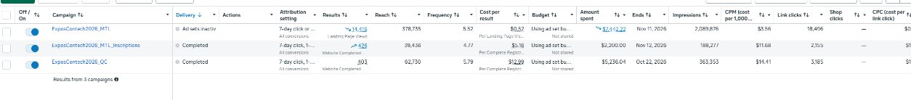 |
| 3, 10 et 17 oct. | Quart de page dans le Journal de Québec, avec code QR | 1 inscription arrivée par le code QR | 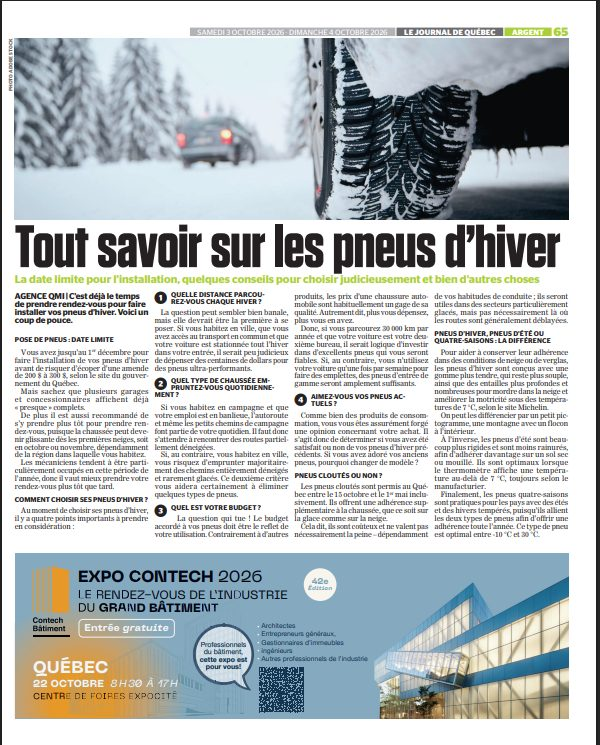 |
| 1er, 8 et 21 oct. | Infolettres Québec (zones, ouverture et clôture, veille) | 30 % d'ouverture · 1 à 2 % de clics | 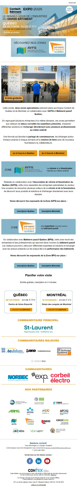 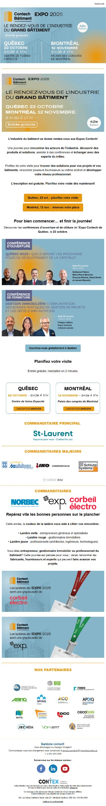 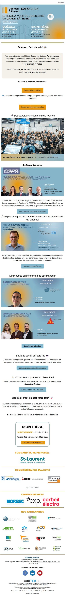 |
| 15 au 21 oct. | Courriels Eventmaker J-7, J-2 et J-1 aux visiteurs, exposants et conférenciers | Visiteurs 21 à 23 % · exposants 32 à 44 % · conférenciers 58 à 59 % | 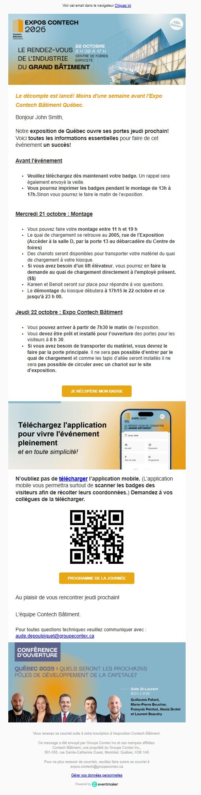 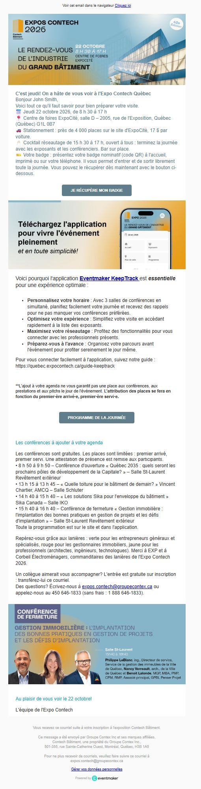 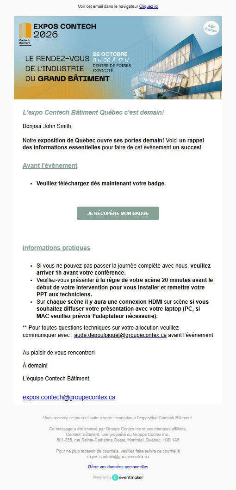 |
| 16 oct. | Quatre nouvelles vidéos pour les pubs. Demande aux développeurs de réparer le suivi des inscriptions de Montréal. | Suivi réparé, campagne « Inscriptions » lancée le 27 oct. | |
| 20 oct. | Rencontre avec Les Affaires : options print et web, envoi à la base de données Les Affaires | Voir la section Les Affaires plus bas | — |
| 22 oct. | Expo Québec, ExpoCité | 1 264 visiteurs inscrits, 596 présents (518 en 2025, +15 %) | 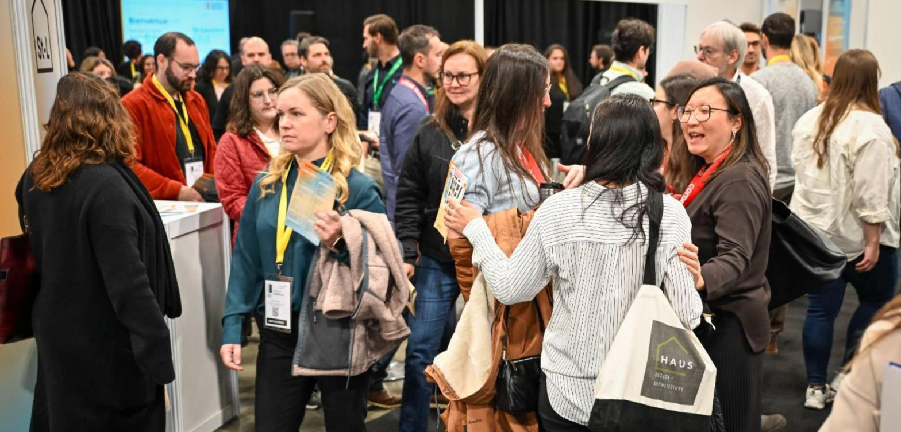 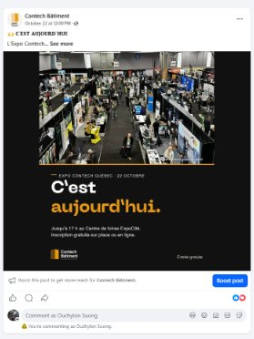 |
| 26 oct. | Liste des contacts scannés envoyée aux 103 exposants · relance aux 486 inscrits absents | Exposants : 64 % d'ouverture · absents : 17 % | 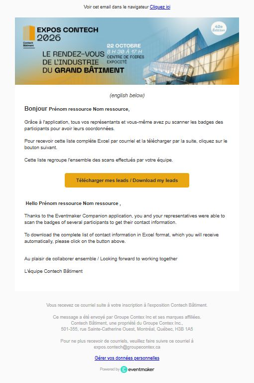 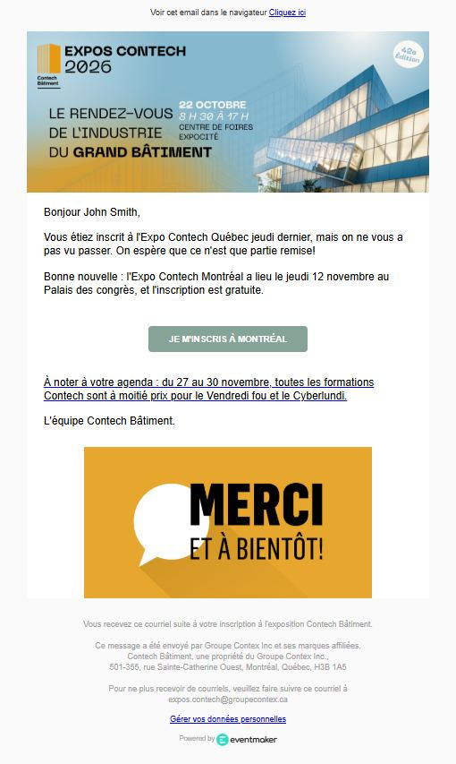 |
| Fin octobre à novembre · Montréal | |||
| 26 oct. | Mot d'ordre de la direction : « all-out sur Montréal » | Infolettres doublées, publications quotidiennes, pubs renforcées. On voit la hausse des inscriptions par jour à partir de la fin octobre. | 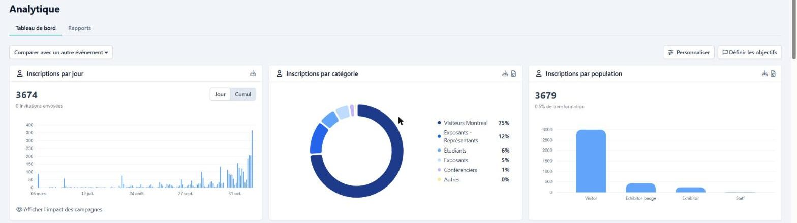 |
| 27 oct. | Pub Meta Montréal réglée sur l'inscription · rencontre de relance avec Les Affaires | 426 inscriptions à 5,16 $ (Meta) | |
| 28 oct. | Trousse de partage et lien personnel envoyés aux 42 conférenciers | 43 % d'ouverture · 12 % de clics · 15 inscrits par les liens des conférenciers | 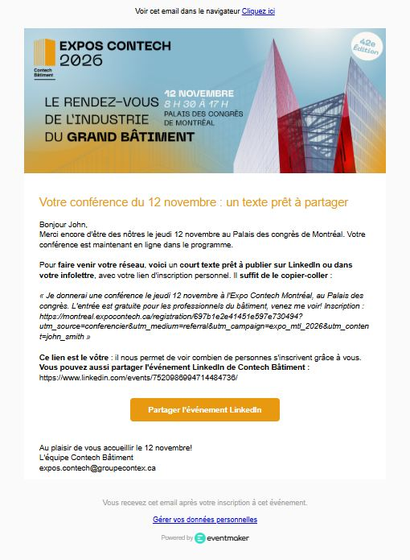 |
| 29 oct. au 10 nov. | Infolettres J-16, J-14, J-10, J-7, J-3, un envoi aux inscrits seulement et quatre envois J-2 par métier | 30 à 36 % d'ouverture · 55 % chez les inscrits | 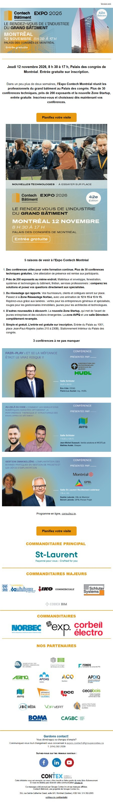 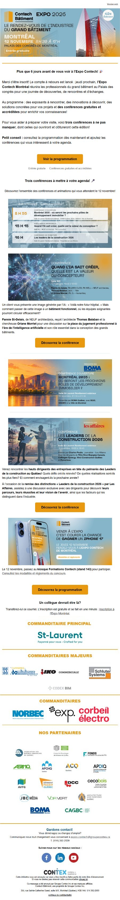 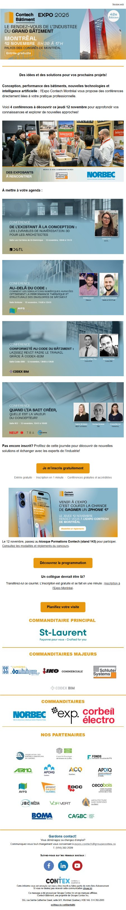 |
| 2 nov. | Récapitulatif J-10 aux exposants | 42 % d'ouverture | |
| 3 nov. | « Venez avec un collègue » aux 1 835 inscrits | 13 % d'ouverture · 1 % de clics | |
| 6 nov. | « Invitez vos clients » aux exposants, avec lien personnel | 26 % d'ouverture · 10 % de clics · 10 inscrits par les liens des exposants | |
| 6 nov. | Deux pubs de plus : vidéo « Industrie » et reciblage des visiteurs du site | 75 inscriptions à 4,51 $ · 30 à 6,17 $ | |
| 10 nov. | Courriels personnels aux grandes entreprises venues en 2025 (318) | 35 % d'ouverture · plusieurs réponses directes | |
| 11 nov. | Courriels J-1 aux visiteurs, exposants et conférenciers | Visiteurs 10 % · exposants 24 % · conférenciers 50 % (39 % de clics) | |
| 12 nov. | Expo Montréal, Palais des congrès · trois notifications dans l'application (7 h 45, 11 h 45, 16 h 30) · relance aux inscrits pas encore arrivés à 11 h | 2 772 visiteurs inscrits, 1 467 présents (1 373 en 2025, +7 %) | |
| 12 et 13 nov. | Sondages aux visiteurs, aux exposants et après chaque conférence | 186 + 38 + 208 réponses (voir l'onglet Sondages) | |
| 16 nov. | Liste des contacts scannés envoyée aux 182 exposants de Montréal | 93 % livrés · 38 % d'ouverture | |


Sources : Eventmaker › Campagnes (les deux Expos), Dialog Insight › Campagnes, Meta Ads Manager. Relevé du 16 nov. 2026.
Les Affaires : ce qui a été discuté, ce qui a été fait
Ce qui a été discuté
- 20 oct. Montréal tire de l'arrière. Options sur la table : un quart de page dans Les Affaires imprimé (édition du 4 nov.), des bannières sur lesaffaires.com et un envoi à la base de données Les Affaires, segmentée par l'équipe Données.
- 27 oct. La direction demande à Les Affaires de prêter main-forte jusqu'au 12 nov. On convient : print et web, deux envois aux abonnés qui ont accepté de recevoir des offres, retirer les déjà-inscrits des envois et segmenter par métier.
Ce qui a été fait
- Visuels livrés aux formats Les Affaires (bannière 970 × 250 et mobile 320 × 50), chacun avec son lien de suivi.
- Texte de l'envoi aux abonnés Les Affaires remis le 29 oct. (objet : « plus de 30 conférences gratuites le 12 nov. »). L'envoi n'a pas pu partir le 30 oct. à 8 h : il fallait d'abord créer le groupe d'envoi dans la base Les Affaires (équipe Données).
- Conférence « Les leaders de la construction 2026 », présentée par Les Affaires, et le palmarès à la clôture, avec le logo Les Affaires dans les présentations.
Les créatifs, tels que livrés (cliquez pour agrandir)

Envoyée aux Affaires le 29 oct., lien avec l’étiquette « lesaffaires ».

Même envoi, même lien de suivi.

12 nov., 16 h, animée par Charles Poulin (Les Affaires).
Publication LinkedIn de l’entreprise lauréate.
Le quart de page du journal Les Affaires (édition du 4 nov.) : ouvrir le PDF sur SharePoint ↗.
Le résultat réel : aucune inscription n'est arrivée dans Eventmaker avec l'étiquette « Les Affaires » (bannières ou envoi). Ça peut vouloir dire que les gens sont venus par un autre chemin, ou que la diffusion a été trop tardive. À confirmer avec Les Affaires : les dates de diffusion et le nombre d'affichages et d'ouvertures. Pour 2027 : réserver ces placements dès septembre, avec un lien de suivi testé.
Les rencontres avec Les Affaires, suggestion par suggestion
Rencontre 1 · mardi 20 oct., 15 h (en ligne) : Montréal tire de l'arrière, environ 1 372 inscrits à trois semaines de l'Expo. Rencontre 2 · mardi 27 oct., 11 h (en ligne, avec Lita) : La direction a demandé aux Affaires d'aider l'équipe jusqu'au 12 nov.
| Ce que Les Affaires ont suggéré | Fait ? | Résultat réel |
|---|---|---|
| Mettre 70 à 80 % du budget pub sur Meta, avec plusieurs concepts pour Montréal | Oui, 27 oct. et 6 nov. | 426 inscriptions à 5,16 $ (campagne « Inscriptions »), dont 75 à 4,51 $ pour la vidéo « Industrie » |
| Retirer les inscrits des infolettres et leur écrire par Eventmaker | Oui, dès le 2 nov. | Envoi aux inscrits seulement : 55 % d'ouverture, 12 % de clics |
| Courriel aux inscrits « venez avec un collègue » | Oui, 3 nov. | 1 835 inscrits · 13 % d'ouverture · 1 % de clics. Inscriptions non mesurables (lien sans étiquette) |
| Infolettres par métier, avec des conférences choisies pour chacun | Oui, 10 nov. | Architectes 36 %, entrepreneurs 33 %, contre 29 % pour l'envoi général |
| Quart de page dans Les Affaires (édition du 4 nov.) et bannières web | Oui | 0 inscription arrivée avec l'étiquette Les Affaires. Affichages et clics à obtenir des Affaires |
| Deux envois aux abonnés Les Affaires qui acceptent les offres (30 oct. et J-7) | Texte remis le 29 oct. | Le 30 oct. n'a pas pu partir (groupe d'envoi à créer). Le 2e envoi est à confirmer avec Les Affaires |
| Envoi à la base de données du Groupe (plus de 80 000 contacts), segmentée par l'équipe de Guillaume | À confirmer | Aucune inscription étiquetée trouvée dans Eventmaker |
| Texte prêt à publier pour les ordres professionnels (OAQ, OIQ) | Oui, OAQ | OAQ : 2 inscrits, 0 venu |
| Pop-up et bandeau Expo Montréal sur le site de Contech | Oui, pop-up en ligne (à retirer maintenant que l'Expo est passée) | Non mesuré dans Eventmaker (pas d'étiquette propre au pop-up) |
| Réserver tôt les dossiers print et web de 2027 | À faire | Voir les recommandations 2027 |
Sources : agenda Outlook (les deux rencontres), notes de rencontre, Eventmaker (champ « utm_source »), Dialog Insight, Meta. Décision prise le 27 oct. : arrêter les liens raccourcis payants (Bitly) et utiliser des liens avec étiquettes classiques.
Les visuels demandés au graphiste externe
Ce qui a été demandé au graphiste externe pendant les Expos, et ce qu'il a livré. Ses visuels sont dans SharePoint › Expos contech › 2026 › COMMUNICATION - MARKETING › 04 - VISUELS ↗.


Les heures de graphisme facturées par RC Design sont dans la carte « Le coût complet des Expos 2026 » (onglet Budgets).
Les courriels envoyés par Eventmaker
Voir chaque courriel, tel que reçu, dans l'onglet Courriels Eventmaker
Eventmaker sert à écrire aux personnes déjà inscrites : rappels, badges, informations pratiques, sondages. Ce ne sont pas les infolettres (qui vont à toute la liste). 26 envois à Montréal, 14 à Québec.
| À qui | Envois | Ouverture | Clics | Ce qu'on en retient |
|---|---|---|---|---|
| Conférenciers | 5 | 35 à 59 % | 8 à 48 % | Le public le plus engagé : ils lisent et cliquent. |
| Exposants, représentants et commanditaires | 19 | 14 à 64 % | 0 à 31 % | Très lus avant l'Expo (badges, logistique), moins après. |
| Visiteurs inscrits | 13 | 6 à 23 % | 1 à 14 % | Rappels lus par 1 sur 5 à Québec, 1 sur 10 à Montréal. |
| Notifications dans l'application (Montréal) | 3 | 3 380 à 3 673 personnes | Nouveau en 2026 : bon matin, dîner aux kiosques, merci. | |
Capture · Eventmaker, liste des campagnes de Montréal
▶ Voir chaque courriel de cette liste, tel que reçu (onglet Infolettres et courriels)
Source : Eventmaker › Campagnes, Expo Montréal 2026 et Expo Québec 2026. Les taux d'ouverture sont gonflés par la protection de la confidentialité d'Apple Mail ; ils servent à comparer les envois entre eux.
Les relais : exposants, conférenciers, partenaires
| Lien personnel donné à… | Inscrits | Venus |
|---|---|---|
| Conférenciers | 15 | 5 |
| Exposants | 12 | 9 |
| BOMA Québec | 4 | 2 |
| OAQ (bannière) | 2 | 0 |
| CBDCA | 1 | 0 |
| Total | 34 | 16 |
Montréal seulement : les liens personnels ont été créés pour Montréal. Source : Eventmaker, champ « utm_source ».
Ce qu'on en retient
- Les relais ont commencé tard (28 oct. et 6 nov.) et ont donné 34 inscrits. En 2025, les invitations personnelles de l'équipe en avaient donné 94. C'est le levier à lancer dès septembre en 2027.
- Les conférenciers lisent tout (jusqu'à 59 % d'ouverture) : ce sont les meilleurs ambassadeurs à équiper.
- Le print n'a presque rien amené de mesurable : 1 inscription par le code QR du Journal de Québec, 0 par Les Affaires.
Questions fréquentes
Qu'a donné l'entente avec Les Affaires ?
Les bannières avaient un lien de suivi propre à Les Affaires. Dans Eventmaker, aucune inscription n'est arrivée avec ce lien. Le résultat est à confirmer avec Les Affaires (statistiques d'affichage et de clics côté Les Affaires).
Les courriels Eventmaker, c'est la même chose que les infolettres ?
Non. Les infolettres partent de Dialog Insight vers toute la base de contacts. Les courriels Eventmaker partent vers les personnes déjà inscrites (visiteurs, exposants, conférenciers) : confirmations, rappels, badges, sondages.
Pourquoi les taux d'ouverture varient autant d'un envoi à l'autre ?
Les envois aux conférenciers et aux exposants touchent de petits groupes très concernés (jusqu'à 64 % d'ouverture). Les envois aux visiteurs touchent des milliers de personnes et ouvrent moins (6 à 23 %).
Les deux journées d'Expo, vécues de l'intérieur
Jour J : ce qui a accroché, et ce que j'ai fait
Québec · jeudi 22 octobre · ExpoCité
Résultat : 1 264 visiteurs inscrits, 596 présents (518 en 2025, +15 %).
| Ce qui s'est passé | La cause | Ce que j'ai fait | Pour 2027 |
|---|---|---|---|
| À l'accueil, une session de scan (check-in) manquait dans Eventmaker. | Pas créée avant l'Expo. | Je l'ai créée sur place pour que l'accueil puisse scanner. | Liste de vérification Eventmaker à J-2, testée sur un vrai téléphone. |
| Un exposant (Vaillancourt) devait remplacer un représentant. | Le représentant inscrit n'était pas celui présent. | J'ai fait l'échange dans Eventmaker pendant l'Expo. | Rappel aux exposants à J-7 : vérifier la liste de leurs représentants. |
| Un participant n'arrivait pas à se connecter à l'application. | Faute de frappe dans son courriel à l'inscription. | J'ai corrigé son courriel; il s'est connecté. | Dire à tout le monde de se connecter en scannant le QR de son badge (aucun courriel à taper). |
| Confusion entre les codes QR et entre les deux applications. | Check-in (accueil) et KeepTrack (exposants et visiteurs) se ressemblent. | J'ai monté une page « Accueil » avec les réponses aux questions fréquentes pour l'équipe sur place. | Une page d'une ligne par question, imprimée à l'accueil. |
| La relance de 11 h aux inscrits pas encore arrivés et les 3 notifications dans l'application ne sont pas parties. | Montées, mais restées en brouillon. | Je les ai toutes envoyées à Montréal (voir plus bas). | Tout programmer à J-2 et vérifier la liste « programmés » la veille. |
| Le merci + sondage aux visiteurs est parti le 26 oct. au lieu du 23. | Resté en brouillon. | Envoyé le lundi 26 oct. À Montréal, le sondage est parti le jour même à 16 h. | Sondage envoyé le jour même, à la fermeture. |
| Le sondage des exposants avait une erreur. | Le questionnaire affichait une erreur à l'envoi du 30 oct. | Questionnaire refait dans Google Forms, renvoyé le 4 nov. Seulement 7 réponses. | Tester le formulaire avec une personne externe avant l'envoi. |
J'ai aussi filmé des témoignages de participants, réutilisés ensuite dans les pubs de Montréal.
Montréal · jeudi 12 novembre · Palais des congrès
Résultat : 2 772 visiteurs inscrits, 1 467 présents (1 373 en 2025, +7 %).
- 7 h 00 · Courriel « C'est aujourd'hui » à 2 728 inscrits.
- 7 h 45 · Notification « Bon matin » dans l'application (3 380 destinataires).
- 9 h 35 · Lita n'a pas accès à l'Expo de Montréal dans son application Check-in. J'écris à Yannis (Eventmaker). 9 h 40 : il répond, l'accès passe par le compte « hôtesse ». Réglé.
- 9 h 45 à 10 h 53 · Premier incident Microsoft Teams (réunions et calendrier).
- Matin · Bastia (kiosque 231) : les représentants ne peuvent pas prendre de notes sur leurs leads. Cause : 4 employés se sont inscrits avec le lien des visiteurs. Je les passe dans la catégorie « Exposants - Représentants », rattachés au compte de Bastia, kiosque 231. Réglé pour les 4.
- Matin · Un visiteur voit « Cette page n'existe pas » en ouvrant son agenda personnalisé. Cause : le module Programme était désactivé dans l'application de Montréal. Je l'active et je choisis la page « Programme Montréal ». Réglé pour tous les visiteurs.
- Matin · Un exposant de Nivtop n'arrive pas à voir Montréal dans l'application. Cause : il se connecte avec un autre courriel, inscrit seulement à Québec. Solution : se connecter avec le courriel d'inscription de Montréal ou scanner le QR de son badge.
- 10 h 27 · Je vérifie que tout part comme prévu : 2 606 inscrits et 680 présents à cette heure, tous les envois de la journée sont programmés.
- 10 h 30 · Les 250 programmes imprimés sont épuisés.
- 11 h 00 · Relance aux 1 796 inscrits pas encore arrivés.
- 11 h 17 · Début de la panne Microsoft (courriels Outlook et Exchange Online). Voir l'encadré plus bas.
- 11 h 45 · Notification « Dîner aux kiosques » (3 562 destinataires).
- Midi · Tournage des capsules vidéo avec cinq formateurs. J'ai préparé un guide de tournage avec les personnes à aller voir et leur kiosque. Les numéros de kiosque étaient décalés dans ma première version : corrigés à 11 h 55 à partir de la liste officielle des exposants.
- 16 h 00 · Sondages aux visiteurs venus (1 443) et aux exposants (615).
- 16 h 30 · Rappel du sondage aux exposants et notification « Merci » (3 673 destinataires).
- 13 nov., 8 h · Merci + sondage aux visiteurs venus (1 454).
La panne Microsoft du 12 novembre, et ce qu'elle a changé pour nous
Ce qui s'est passé : le jour de l'Expo de Montréal, Microsoft a eu une panne majeure. À partir de 11 h 17, les boîtes courriel Outlook (Exchange Online) ne fonctionnaient plus correctement. Teams avait déjà eu un incident de 9 h 45 à 10 h 53. Microsoft a indiqué que « la livraison des courriels pouvait être retardée ». Le retour à la normale s'est fait graduellement le 13 nov., et complètement le 14 nov.
Ce que ça a pu changer :
- Les sondages de 16 h et 16 h 30 sont partis en pleine panne. Eventmaker les a bien envoyés, mais chez les gens dont la boîte courriel est chez Microsoft (c'est le cas de beaucoup d'entreprises), ils ont pu arriver en retard, parfois le lendemain.
- Les taux d'ouverture de ces envois sont probablement sous-estimés : 7 % pour le sondage aux visiteurs de Montréal, contre 13 % pour celui de Québec. On a quand même reçu 186 réponses de visiteurs et 38 d'exposants.
- Le merci du 13 nov. à 8 h est parti pendant le rétablissement.
- Dans l'équipe, Outlook et Teams pouvaient aussi être perturbés à partir de 11 h 17, en pleine journée d'Expo.
Source : suivi des incidents Microsoft (EX1550543, MO1550821); Wikipédia, 2026 Microsoft outage. Taux d'ouverture : Eventmaker, relevé du 16 nov.
Pour 2027 : garder un plan B pour la journée : sondage aussi par QR code à la sortie et dans l'application, et un canal de secours pour l'équipe (groupe texto).
Les demandes reçues sur le terrain, en un coup d'œil
| Demande | Réglé ? | Délai |
|---|---|---|
| Accès Check-in à Montréal | Oui | 5 minutes (avec Yannis) |
| Prise de notes impossible sur les leads | Oui, 4 personnes | Le matin même |
| Agenda personnalisé introuvable | Oui, pour tous | Le matin même |
| Connexion à la mauvaise Expo | Oui | Immédiat |
| Badges des étudiants à imprimer d'avance | Oui, envoi dédié le 20 oct. | La veille |
| Session de scan manquante | Oui | Sur place |
Questions fréquentes
Est-ce que ces problèmes ont fait perdre des visiteurs ?
Non, ils ont touché l'expérience (application, badges, programmes), pas le nombre de visiteurs : les deux Expos sont en hausse de présents. Mais un exposant qui ne peut pas noter ses leads est un exposant moins content, et c'est lui qui rachète un kiosque.
Pourquoi les représentants de Bastia étaient inscrits comme visiteurs ?
Ils ont utilisé le lien d'inscription des visiteurs, qui est public. En 2027, le courriel aux exposants doit répéter clairement le lien des représentants, et une vérification à J-3 doit repérer les adresses de compagnies exposantes inscrites comme visiteurs.
La panne Microsoft, c'est vérifiable ?
Oui. Microsoft l'a publiée dans son suivi des incidents (EX1550543 pour les courriels, MO1550821 pour Microsoft 365), et elle a été couverte dans les médias. Les liens sont dans l'encadré.
Les journées des Expos · l'équipe
Ce qui a accroché, et qui a fait quoi
Ce qui a accroché, et comment ça a été réglé
| Le problème | Ce qui a été fait | Pour 2027 |
|---|---|---|
| Le suivi des inscriptions Facebook de Montréal ne fonctionnait pas (1er au 15 oct.) | Demande aux développeurs le 16 oct. ; la campagne a roulé en « visites du site » en attendant, puis a été réglée sur l'inscription le 27 oct. | Tester le suivi avant de lancer les pubs. |
| Une infolettre Québec J-7 marquée « programmée » n'est pas partie (15 oct.) | Remplacée par un envoi J-1 le 21 oct., avec la conférence de la RBQ en vedette. | Vérifier chaque envoi dans la liste « Programmées » la veille. |
| Erreurs sur les badges des exposants | Trois courriels de correction (19 oct. à Québec, 2 nov. à Montréal) ; 41 % d'ouverture, 30 % de clics : l'information est passée. Deux autres correctifs ont suivi (lien de calendrier le 26 oct., J-7 exposants le 9 nov.). | Faire relire le premier envoi aux exposants par la logistique. |
| Des liens du programme menaient à la mauvaise conférence (BOMA, Résilience) | Corrigés le 29 oct., après un changement de salle de dernière minute. | Revérifier les liens après chaque changement d'horaire. |
| Le formulaire de sondage d'Eventmaker a atteint sa limite | Les sondages sont passés sur Google Forms, avec le lien envoyé par Eventmaker (4 nov.). Le questionnaire exposants de Québec a dû être renvoyé. | Monter les sondages dans Google Forms avant l'Expo ; un seul courriel de sondage par personne. |
| Les représentants d'un exposant étaient inscrits comme visiteurs à Québec | Leurs contacts scannés ne pouvaient pas être rattachés à leur entreprise ; pour Montréal, ils ont été inscrits dans la bonne catégorie (11 nov.). | Vérifier la catégorie des représentants à J-7. |
| Le jour J à Montréal, les programmes imprimés ont fondu (250 restants à 10 h 30) | Signalé en direct par l'équipe d'accueil en matinée. | Imprimer selon la prévision d'inscrits et pousser l'application avant l'Expo. |
| Badges peu scannés chez les exposants | Constaté après l'Expo : les présents comptés sont sous-estimés (voir « D'où viennent les chiffres »). | Scanner chaque badge et compter les entrées à la porte. |
| Un recruteur s'est installé au pied des escaliers le jour de Montréal | L'espace relevait de l'aire de restauration et non du Palais ; la direction a pris le dossier en main. | En parler à l'avance avec le Palais et l'aire de restauration. |
Questions fréquentes
Qui contacter pour quoi ?
Pour la direction et les partenaires : Patrick. Pour la logistique : Aude De Poulpiquet. Pour la programmation : l'équipe de la programmation. Pour le marketing : Lita.
Les problèmes du jour J ont-ils eu un impact sur les résultats ?
Ils ont touché l'expérience (badges, programmes imprimés, numérisation des badges exposants), pas le nombre de visiteurs. Chacun a une correction prévue pour 2027 dans le tableau.
Les infolettres Expos 2026, au complet
Chaque envoi, tel que reçu
Dans cet onglet : Infolettres (toute la liste) · Courriels Eventmaker (inscrits, exposants, conférenciers)
1er oct. · Tous les contacts
Les zones AVFQ et Bâtiment passif
30 % ouverture · 1 % clics · 19 167 contacts
8 oct. · Tous les contacts
Québec : ouverture et clôture dévoilées
30 % ouverture · 2 % clics · 19 128 contacts
21 oct. · Tous les contacts
Québec, c'est demain
30 % ouverture · 1 % clics · 19 081 contacts
27 oct. · Tous les contacts
Montréal J-16 : vos conférences gratuites
30 % ouverture · 2 % clics · 19 034 contacts
29 oct. · Tous les contacts
Montréal J-14 : idées et innovations, Zone Startup
33 % ouverture · 2 % clics · 19 950 contacts

2 nov. · Non-inscrits
Montréal J-10 : êtes-vous inscrit?
32 % ouverture · 2 % clics · 19 077 contacts
5 nov. · Non-inscrits
Montréal J-7 : une programmation à ne pas manquer
30 % ouverture · 1 % clics · 18 697 contacts

6 nov. · Inscrits seulement
Montréal J-6 : on a hâte de vous voir
55 % ouverture · 12 % clics · 1 138 contacts
9 nov. · Non-inscrits
Montréal J-3 : plus que 3 jours
30 % ouverture · 1 % clics · 18 669 contacts

10 nov. · Liste ciblée (318)
Relance personnelle aux grandes entreprises
35 % ouverture · 3 % clics · 318 contacts
10 nov. · Ciblé par métier
J-2 · Architectes et conception
36 % ouverture · 1 % clics · 2 558 contacts
10 nov. · Ciblé par métier
J-2 · Entrepreneurs
33 % ouverture · 1 % clics · 3 307 contacts

10 nov. · Ciblé par métier
J-2 · Gestionnaires immobiliers
29 % ouverture · 2 % clics · 780 contacts

10 nov. · Ciblé par métier
J-2 · Autres professionnels
26 % ouverture · 1 % clics · 11 999 contacts

Source : Dialog Insight › Communications › Campagnes, colonnes « Ouv. » et « Clics ». Captures du 16 novembre 2026.
Questions fréquentes
Est-ce qu'on envoie trop d'infolettres?
L'ouverture se tient autour de 30 % envoi après envoi, sans baisser au fil de la campagne. Les infolettres sont la 2e source d'inscriptions (763 à Montréal, 318 à Québec), et leurs inscrits viennent une fois sur deux.
Pourquoi certains envois ont des taux beaucoup plus hauts?
Ce sont les envois ciblés : 55 % d'ouverture chez les inscrits (J-6), 36 % chez les architectes (J-2). Plus le message parle directement à la personne, plus elle l'ouvre. D'où la recommandation de segmenter par métier.
Où je peux voir ces chiffres moi-même?
Dialog Insight › Communications › Campagnes, colonnes « Ouv. » et « Clics ».
Eventmaker · tous les envois aux inscrits
Chaque courriel Eventmaker, tel que reçu
16 oct. · 8 h 00 · Québec
J-7 : vos informations d'exposant
176 destinataires · 44 % d'ouverture (77) · 18 % de clics (31)
Pour : Exposants de Québec
Objet : « J-7 | Expo Contech Bâtiment Québec : vos informations exposant »
16 oct. · 8 h 05 · Québec
J-7 : vos informations de conférencier
26 destinataires · 58 % d'ouverture (15) · 8 % de clics (2)
Pour : Conférenciers de Québec
Objet : « J-7 | Expo Contech Bâtiment Québec : vos informations conférencier »

19 oct. · 17 h 21 · Québec
Erratum : votre badge est disponible
213 destinataires · 41 % d'ouverture (87) · 31 % de clics (66)
Pour : Exposants de Québec
Objet : « Erratum | Expo Contech Québec : votre badge est disponible »
Correctif : le courriel J-7 du 16 oct. n'avait pas le lien du badge.

20 oct. · 8 h 05 · Québec
J-2 : c'est jeudi, votre badge et toutes les infos
996 destinataires · 23 % d'ouverture (234) · 14 % de clics (137)
Pour : Visiteurs inscrits à Québec
Objet : « Expo Contech Québec, c'est jeudi! Votre badge et toutes les infos »
20 oct. · 8 h 10 · Québec
Badge des étudiants CNDF
50 destinataires · 6 % d'ouverture (3) · 6 % de clics (3)
Pour : Étudiants du Cégep Notre-Dame-de-Foy
Objet : « Votre badge pour l'Expo Contech Québec (étudiants CNDF) »
Demandé par l'enseignante, qui imprimait les badges pour son groupe.

21 oct. · 8 h 00 · Québec
J-1 : c'est demain (exposants)
244 destinataires · 32 % d'ouverture (77) · 9 % de clics (21)
Pour : Exposants de Québec
Objet : « J-1 | Expo Contech Bâtiment Québec : c'est demain! »

21 oct. · 8 h 05 · Québec
J-1 : c'est demain (conférenciers)
27 destinataires · 59 % d'ouverture (16) · 48 % de clics (13)
Pour : Conférenciers de Québec
Objet : « J-1 | Expo Contech Bâtiment Québec : c'est demain! »
21 oct. · 8 h 10 · Québec
J-1 : c'est demain, votre badge et l'horaire
1 042 destinataires · 21 % d'ouverture (216) · 12 % de clics (123)
Pour : Visiteurs inscrits à Québec
Objet : « L'Expo Contech Québec, c'est demain! Votre badge et l'horaire »

26 oct. · 12 h 53 · Québec
Merci + sondage des visiteurs
596 destinataires · 13 % d'ouverture (80) · 7 % de clics (40)
Pour : Visiteurs venus à Québec
Objet : « Merci d'être venu à l'Expo Contech Québec! »
Prévu le 23 oct., resté en brouillon, parti le lundi 26 oct. Résultat du sondage : 75 visiteurs ont répondu (Québec), 93 % satisfaits. Voir les réponses.

26 oct. · 12 h 54 · Québec
On s'est manqués : invitation à Montréal
486 destinataires · 17 % d'ouverture (83) · 3 % de clics (13)
Pour : Inscrits de Québec qui ne sont pas venus
Objet : « On s'est manqués à l'Expo Contech Québec »
Prévu le 23 oct., parti le 26 oct. avec le premier. Invite les absents à l'Expo de Montréal.
26 oct. · 15 h 08 · Québec
Téléchargez vos leads
103 destinataires · 64 % d'ouverture (66) · 20 % de clics (21)
Pour : Exposants de Québec
Objet : « Expo Contech Québec : téléchargez vos leads / Download your leads »
Le courriel le plus lu de Québec : les exposants veulent leurs contacts.
26 oct. · 15 h 50 · Québec
Téléchargez vos leads (conférenciers-commanditaires)
11 destinataires · 55 % d'ouverture (6) · 0 % de clics (0)
Pour : Conférenciers-commanditaires de Québec
Objet : « Expo Contech Québec : téléchargez vos leads / Download your leads »
26 oct. · 15 h 50 · Montréal
Erratum : le lien pour ajouter l'Expo à votre calendrier
1 367 destinataires · 19 % d'ouverture (266) · 7 % de clics (97)
Pour : Inscrits de Montréal
Objet : « Erratum : ajoutez l'Expo Contech Montréal du 12 novembre à votre calendrier »
Correctif : le bouton du courriel de confirmation affichait la date de 2024.

26 oct. · 16 h 20 · Montréal
Offre Useeme : écrans LED pour les kiosques
167 destinataires · 54 % d'ouverture (90) · 5 % de clics (9)
Pour : Exposants de Montréal
Objet : « Votre stand mérite d'être remarqué : offre écrans LED réservée aux exposants »
Offre d'un partenaire (Useeme) relayée aux exposants.

28 oct. · 12 h 19 · Montréal
Kit de partage + lien personnel
42 destinataires · 43 % d'ouverture (18) · 12 % de clics (5)
Pour : Conférenciers de Montréal
Objet : « Votre conférence à l'Expo Contech Montréal : un texte prêt à partager »
Résultat : 15 inscrits par les liens des conférenciers, dont 5 sont venus.
30 oct. · 8 h 00 · Québec
Merci + sondage des exposants
313 destinataires · 19 % d'ouverture (58) · 2 % de clics (7)
Pour : Exposants et représentants de Québec
Objet : « Merci d'avoir exposé à l'Expo Contech Québec »
Résultat du sondage : 7 exposants seulement ont répondu (Québec). Le premier envoi avait un questionnaire défectueux; il a été corrigé et renvoyé le 4 nov., trop tard. Voir les réponses.

2 nov. · 8 h 00 · Montréal
J-10 : récapitulatif des informations importantes
302 destinataires · 42 % d'ouverture (126) · 6 % de clics (18)
Pour : Exposants de Montréal
Objet : « Expo Contech Montréal : informations importantes »
2 nov. · 10 h 30 · Montréal
Erratum : votre badge (1er correctif)
309 destinataires · 41 % d'ouverture (128) · 11 % de clics (33)
Pour : Exposants de Montréal
Objet : « Erratum : votre badge pour l'Expo Contech Montréal »
Correctif : le J-10 n'avait pas le bouton du badge.

2 nov. · 14 h 02 · Montréal
Votre badge à jour (2e correctif)
320 destinataires · 36 % d'ouverture (116) · 30 % de clics (95)
Pour : Exposants de Montréal
Objet : « Votre badge à jour : Expo Contech Montréal »
Correctif : le badge envoyé le matin affichait encore les informations de l'an dernier.

3 nov. · 8 h 00 · Montréal
Venez avec un collègue
1 835 destinataires · 13 % d'ouverture (245) · 1 % de clics (24)
Pour : Inscrits de Montréal
Objet : « Le 12 novembre, venez avec un collègue »
Suggestion des Affaires (20 oct.). Résultat non mesurable : le bouton menait au formulaire sans étiquette de suivi.
4 nov. · 9 h 00 · Québec
Sondage exposants corrigé (renvoi)
314 destinataires · 20 % d'ouverture (62) · 0 % de clics (1)
Pour : Exposants et représentants de Québec
Objet : « Questionnaire corrigé : votre avis sur l'Expo Contech Québec »
Renvoi après correction du questionnaire.

5 nov. · 8 h 00 · Montréal
J-7 : vos infos d'exposant
390 destinataires · 33 % d'ouverture (127) · 14 % de clics (53)
Pour : Exposants de Montréal
Objet : « Expo Contech Montréal dans une semaine : vos infos d'exposant »
Des informations de montage étaient erronées : erratum envoyé le 9 nov.

5 nov. · 8 h 00 · Montréal
J-7 : dans une semaine (avec le concours iPhone 17)
1 972 destinataires · 11 % d'ouverture (225) · 6 % de clics (115)
Pour : Inscrits de Montréal
Objet : « Dans une semaine : l'Expo Contech Montréal vous attend »

5 nov. · 8 h 06 · Montréal
J-7 : infos pour votre conférence
49 destinataires · 35 % d'ouverture (17) · 45 % de clics (22)
Pour : Conférenciers de Montréal
Objet : « Expo Contech Montréal dans une semaine : infos pour votre conférence »

6 nov. · 10 h 30 · Montréal
Invitez vos clients à votre kiosque (lien personnel)
429 destinataires · 26 % d'ouverture (112) · 10 % de clics (42)
Pour : Exposants de Montréal
Objet : « Invitez vos clients à votre kiosque le 12 novembre »
Résultat : 10 inscrits par les liens des exposants, dont 7 sont venus.
9 nov. · 8 h 00 · Montréal
Erratum : les bonnes infos pour le montage
451 destinataires · 28 % d'ouverture (125) · 9 % de clics (40)
Pour : Exposants de Montréal
Objet : « Erratum : les bonnes infos pour le montage et le jour de l'Expo »

11 nov. · 7 h 30 · Montréal
Dernière chance d'inviter vos clients
516 destinataires · 21 % d'ouverture (106) · 3 % de clics (17)
Pour : Exposants de Montréal
Objet : « C'est demain : dernière chance d'inviter vos clients à votre kiosque »

11 nov. · 8 h 00 · Montréal
J-1 : vos infos d'exposant
516 destinataires · 24 % d'ouverture (124) · 9 % de clics (45)
Pour : Exposants de Montréal
Objet : « C'est demain : vos infos d'exposant pour l'Expo Contech Montréal »
Le mot de passe Wi-Fi des exposants est masqué sur la capture.
11 nov. · 8 h 05 · Montréal
J-1 : votre conférence, c'est demain
54 destinataires · 50 % d'ouverture (27) · 39 % de clics (21)
Pour : Conférenciers de Montréal
Objet : « C'est demain : votre conférence à l'Expo Contech Montréal »

11 nov. · 8 h 10 · Montréal
J-1 : c'est demain, votre badge et l'horaire
2 549 destinataires · 10 % d'ouverture (248) · 5 % de clics (134)
Pour : Inscrits de Montréal
Objet : « L'Expo Contech Montréal, c'est demain! Votre badge et l'horaire »
12 nov. · 7 h 00 · Montréal
Jour J : c'est aujourd'hui
2 728 destinataires · 8 % d'ouverture (225) · 3 % de clics (72)
Pour : Inscrits de Montréal
Objet : « C'est aujourd'hui! L'Expo Contech Montréal vous attend dès 8 h 30 »
12 nov. · 7 h 45 · Montréal · notification dans l'application
« Bon matin »
3 380 destinataires (inscrits ayant l'application)
Bon matin! L'Expo Contech Montréal ouvre ses portes à 8 h 30 au Palais des congrès. Première conférence à 8 h 55, salle St-Laurent Revêtement extérieur. Votre badge et votre agenda sont dans l'app.
Les notifications n'ont pas de taux d'ouverture dans Eventmaker.
12 nov. · 11 h 00 · Montréal
Relance : il est encore temps de venir
1 796 destinataires · 7 % d'ouverture (123) · 1 % de clics (11)
Pour : Inscrits pas encore arrivés à 11 h
Objet : « Il est encore temps : l'Expo Contech Montréal… »
Parti 17 minutes avant le début de la panne Microsoft (11 h 17).

12 nov. · 11 h 45 · Montréal · notification dans l'application
« Dîner aux kiosques »
3 562 destinataires (inscrits ayant l'application)
Pause dîner? C'est le bon moment pour faire le tour des kiosques. Les conférences reprennent dès 13 h : consultez le programme dans l'app.
Les notifications n'ont pas de taux d'ouverture dans Eventmaker.
12 nov. · 16 h 00 · Montréal
Sondage visiteurs, avant de partir
1 443 destinataires · 7 % d'ouverture (99) · 2 % de clics (31)
Pour : Visiteurs venus à Montréal
Objet : « Avant de partir : 3 minutes pour nous dire comment s'est passée votre visite »
⚠ Envoyé pendant la panne Microsoft du 12 nov. : chez les personnes dont la boîte courriel est chez Microsoft (Outlook, Office 365), il a pu arriver en retard, parfois le lendemain. Le taux d'ouverture est probablement sous-estimé. Résultat du sondage : 186 visiteurs ont répondu (Montréal), 95 % satisfaits. Voir les réponses.
12 nov. · 16 h 00 · Montréal
Sondage exposants, avant de remballer
615 destinataires · 16 % d'ouverture (97) · 4 % de clics (22)
Pour : Exposants et représentants de Montréal
Objet : « Avant de remballer : 2 minutes pour nous parler de votre journée »
⚠ Envoyé pendant la panne Microsoft du 12 nov. : chez les personnes dont la boîte courriel est chez Microsoft (Outlook, Office 365), il a pu arriver en retard, parfois le lendemain. Le taux d'ouverture est probablement sous-estimé. Résultat du sondage : 38 exposants ont répondu (Montréal), 89 % satisfaits. Voir les réponses.
12 nov. · 16 h 30 · Montréal
Rappel du sondage exposants
615 destinataires · 14 % d'ouverture (86) · 3 % de clics (16)
Pour : Exposants et représentants de Montréal
Objet : « Petit rappel : votre avis avant la fermeture (2 min) »
⚠ Envoyé pendant la panne Microsoft du 12 nov. : chez les personnes dont la boîte courriel est chez Microsoft (Outlook, Office 365), il a pu arriver en retard, parfois le lendemain. Le taux d'ouverture est probablement sous-estimé.

12 nov. · 16 h 30 · Montréal · notification dans l'application
« Merci »
3 673 destinataires (inscrits ayant l'application)
Merci d'être venus à l'Expo Contech Montréal! Surveillez vos courriels demain : un court sondage vous attend pour nous aider à préparer la prochaine édition.
Les notifications n'ont pas de taux d'ouverture dans Eventmaker.
13 nov. · 8 h 00 · Montréal
Merci + sondage (relance)
1 454 destinataires · 7 % d'ouverture (106) · 2 % de clics (29)
Pour : Visiteurs venus à Montréal
Objet : « Merci d'être venu à l'Expo Contech Montréal! »
Parti pendant le rétablissement de Microsoft (retour à la normale le 13 nov. en après-midi).

16 nov. · 11 h 01 · Montréal
Téléchargez vos leads
182 destinataires · 40 % d'ouverture (73) · 3 % de clics (5)
Pour : Exposants de Montréal
Objet : « Vos leads de l'Expo Contech Montréal / Your Expo Contech leads »
Ce qui n'est pas parti, ou pas à temps : pourquoi, et la suite
Chaque envoi prévu au calendrier qui n'est pas parti comme prévu, avec la raison, le type d'écart, et ce qui a été fait ou reste à faire.
| Expo | Envoi prévu | Pourquoi | Type | Suite |
|---|---|---|---|---|
| Québec | J-7 exposants et conférenciers, prévu le 15 oct. à 10 h | Resté en brouillon; vu le jour même en vérifiant Eventmaker. | Envoi resté en brouillon | Parti le lendemain, 16 oct. à 8 h. Depuis : la liste « programmés » est vérifiée chaque matin. |
| Québec | J-9 visiteurs (infos + concours), 14 oct. | Décision de ne pas l'envoyer : il n'y avait pas de concours à Québec, et les infos pratiques étaient dans les envois J-2 et J-1. | Choix volontaire | Aucune. |
| Québec | Jour J : relance des inscrits pas encore arrivés à 11 h | Montée le 20 oct., mais jamais programmée. | Envoi non programmé | Corrigé pour Montréal : partie à 11 h à 1 796 inscrits. |
| Québec | 3 notifications dans l'application (bon matin, dîner, merci) | Montées le 20 oct., mais jamais programmées. | Envoi non programmé | Corrigé pour Montréal : les 3 sont parties (3 380 à 3 673 destinataires). |
| Québec | Merci + sondage aux visiteurs, prévu le 23 oct. | Resté en brouillon. | Envoi non programmé | Parti le lundi 26 oct. Pour Montréal, sondage le jour même à 16 h. |
| Québec | Sondage des exposants, 30 oct. | Le questionnaire affichait une erreur à l'envoi. | Formulaire à tester avant l'envoi | Refait et renvoyé le 4 nov. (7 réponses seulement). En 2027 : test par une personne externe avant l'envoi. |
| Québec | Attestations de présence J+4 | Aucune campagne d'attestation trouvée dans Eventmaker pour Québec. | À vérifier | Vérifier avec Lyana si elles ont été envoyées autrement. Sinon, les envoyer avec celles de Montréal. |
| Montréal | Attestations de présence J+4, 16 nov. | Laissées en brouillon volontairement : il fallait attendre la liste complète des présents à chaque conférence. | En attente des scans | À envoyer cette semaine, une fois les scans par conférence vérifiés (Ouchylon). |
Ce qu'on en retient
- Les exposants lisent ce qui les concerne directement : leads (64 % à Québec), badges et erratums (jusqu'à 41 % d'ouverture et 31 % de clics).
- Les conférenciers sont le public le plus engagé : jusqu'à 59 % d'ouverture et 48 % de clics.
- Les rappels aux visiteurs ont été moins ouverts à Montréal : 8 à 11 % (J-7, J-1, Jour J), contre 21 à 24 % à Québec (J-2, J-1). La liste de Montréal est deux fois plus grande, contient plus d'inscrits arrivés par la pub, et a reçu plus d'envois les mêmes semaines.
- Six correctifs entre le 19 oct. et le 9 nov. : badge oublié, mauvaise date de calendrier, infos de montage erronées. En 2027 : un test complet (liens, badge, date) avant chaque envoi, vérifié par une 2e personne.
- Les sondages de Montréal sont partis pendant la panne Microsoft du 12 nov. (voir Jour J, dans l'onglet Actions 2026).
Questions fréquentes
Pourquoi certains courriels ont été envoyés deux fois ?
Ce ne sont pas des doublons : ce sont des correctifs. Par exemple, le 2 nov., le récapitulatif aux exposants n'avait pas le bouton du badge (1er correctif à 10 h 30), puis le badge affichait les informations de l'an dernier (2e correctif à 14 h 02).
Pourquoi le merci de Québec est parti le 26 oct. et pas le 23 ?
Il était monté pour le 23 oct. mais il est resté en brouillon. Il a été envoyé le lundi 26 oct., en même temps que le courriel aux absents. À Montréal, le sondage est parti le jour même à 16 h.
Est-ce qu'on peut voir qui a ouvert ?
Oui, Eventmaker le montre personne par personne. On ne le publie pas ici, parce que ce sont des données personnelles.
Réseaux sociaux · publications non payées
Ce qu'on a publié, et comment les gens ont réagi
Les vidéos
Appuyez sur ▶ pour faire jouer. Les chiffres viennent de Meta Business Suite et d'Ads Manager.
Pub Facebook 9:16 · 26 inscriptions
Reel 9 nov. · 380 vues · 4 réactions
Reel 10 nov. · 719 vues · 8 réactions · 5 partages
Reel 8 nov. · 576 vues (dont 281 boostées)
Reel 11 nov. · 152 vues · 2 réactions
Reel 9 nov. · 144 vues · 2 réactions
Reel 9 nov. · 224 vues · 4 réactions
Facebook · publications Expos
48
31 photos et 16 reels, de septembre au 13 novembre
Facebook · vues
26 051
142 réactions · 26 partages · 82 clics sur le lien
LinkedIn · impressions
16 844
16 oct. au 14 nov. · +159 % vs les 30 jours d'avant
LinkedIn · réactions
435
23 commentaires · 51 partages (+538 %)
Facebook : les publications qui ont le plus été vues
| Date | Publication | Vues | Réactions | Partages | Clics |
|---|---|---|---|---|---|
| 9 nov. | Conférence de la RBQ : inspection des travaux | 6 698 | 3 | 1 | 24 |
| 16 oct. | Lancement Montréal : le rendez-vous de l'industrie | 3 880 | 4 | 4 | 6 |
| 5 nov. | Reel « Jeudi prochain » | 754 | 3 | 2 | 2 |
| 2 oct. | Tout savoir pour l'Expo Québec | 749 | 3 | 1 | 6 |
| 10 nov. | Reel entrevue Traceo (tourné à Québec) | 719 | 8 | 5 | – |
| 30 sept. | « L'an dernier, vous étiez nombreux » | 709 | 6 | 0 | 8 |
| 5 oct. | Commanditaire principal Fabrication St-Laurent | 597 | 5 | 1 | 4 |
| 29 oct. | Reel « Une journée à l'Expo » | 586 | 6 | 0 | 2 |
| 13 nov. | « Merci, Montréal! » | 373 | 11 | 0 | 4 |
Source : Meta Business Suite › Contenu › Publications, 90 derniers jours. Une publication typique fait 130 à 450 vues; les deux premières sont nettement au-dessus du reste.
LinkedIn : la page Contech Bâtiment
| Publication | Impr. | Réactions | Comm. |
|---|---|---|---|
| Les leaders de la construction (11 nov.) | 1 220 | 25 | 4 |
| Merci, Expo Montréal (13 nov.) | 935 | 46 | 1 |
| C'est aujourd'hui, vidéo (12 nov.) | 195 | 10 | 0 |
Source : LinkedIn › Page Contech Bâtiment › Statistiques › Contenu.
Ce qu'on en retient
- Les gens réagissent aux personnes, pas aux annonces. Les entrevues (Traceo, Cecobois, participants) et les remerciements obtiennent le plus de réactions. Les publications « programme » sont vues, mais peu commentées.
- LinkedIn engage plus que Facebook : 435 réactions en 30 jours sur LinkedIn (toutes publications), contre 142 pour les 48 publications Expos sur Facebook. Pour 2027, LinkedIn passe en premier pour les conférences et les conférenciers.
- Les pubs payées sont dans l'onglet « Actions 2026 », avec les inscriptions de chacune.
Toutes les publications Expos, telles qu'elles ont été vues
Chaque capture montre la publication complète : le visuel, le texte, les réactions (👍 ❤️), le nombre de commentaires et de partages et, quand il y en a, les commentaires avec le nom des personnes. Cliquez sur une capture pour l'agrandir.
À remarquer : les commentaires viennent surtout de nos partenaires et conférenciers (Cecobois, Norbec, Portail Constructo, Louise-Misako Mazauric, Patrick Rouillard). Sur LinkedIn, « Les leaders de la construction » et « Montréal 2035 » ont eu le plus de réactions. Sur Facebook, la publication sur la conférence de la RBQ a été la plus vue (6 698 vues), et quelqu'un a demandé en commentaire si elle était aussi offerte à Québec.
Cliquez sur une image pour ouvrir la vraie publication (la vidéo joue, et on voit les réactions et commentaires à jour). « Agrandir » montre la capture. LinkedIn et Facebook peuvent demander d'être connecté.
▶ Voir la publication (réactions à jour) ↗ · Agrandir

▶ Voir la publication (réactions à jour) ↗ · Agrandir

▶ Voir la publication (réactions à jour) ↗ · Agrandir

▶ Voir la publication (réactions à jour) ↗ · Agrandir

▶ Voir la publication (réactions à jour) ↗ · Agrandir
▶ Voir la publication (réactions à jour) ↗ · Agrandir

▶ Voir la publication (réactions à jour) ↗ · Agrandir

▶ Voir la publication (réactions à jour) ↗ · Agrandir

▶ Voir la publication (réactions à jour) ↗ · Agrandir

▶ Voir la publication (réactions à jour) ↗ · Agrandir

▶ Voir la publication (réactions à jour) ↗ · Agrandir

▶ Voir la publication (réactions à jour) ↗ · Agrandir

▶ Voir la publication (réactions à jour) ↗ · Agrandir

▶ Voir la publication (réactions à jour) ↗ · Agrandir

▶ Voir la publication (réactions à jour) ↗ · Agrandir

▶ Voir la publication (réactions à jour) ↗ · Agrandir

▶ Voir la publication (réactions à jour) ↗ · Agrandir

▶ Voir la publication (réactions à jour) ↗ · Agrandir

▶ Voir la publication (réactions à jour) ↗ · Agrandir

▶ Voir la publication (réactions à jour) ↗ · Agrandir

▶ Voir la publication (réactions à jour) ↗ · Agrandir

▶ Voir la publication (réactions à jour) ↗ · Agrandir

▶ Voir la publication (réactions à jour) ↗ · Agrandir

▶ Voir la publication (réactions à jour) ↗ · Agrandir

▶ Voir la publication (réactions à jour) ↗ · Agrandir

▶ Voir la publication (réactions à jour) ↗ · Agrandir

▶ Voir la publication (réactions à jour) ↗ · Agrandir

▶ Voir la publication (réactions à jour) ↗ · Agrandir

▶ Voir la publication (réactions à jour) ↗ · Agrandir

▶ Voir la publication (réactions à jour) ↗ · Agrandir

▶ Voir la publication (réactions à jour) ↗ · Agrandir

▶ Voir la publication (réactions à jour) ↗ · Agrandir

▶ Voir la publication (réactions à jour) ↗ · Agrandir

▶ Voir la publication (réactions à jour) ↗ · Agrandir
▶ Voir la publication (réactions à jour) ↗ · Agrandir

▶ Voir la publication (réactions à jour) ↗ · Agrandir

▶ Voir la publication (réactions à jour) ↗ · Agrandir

▶ Voir la publication (réactions à jour) ↗ · Agrandir

▶ Voir la publication (réactions à jour) ↗ · Agrandir

▶ Voir la publication (réactions à jour) ↗ · Agrandir

▶ Voir la publication (réactions à jour) ↗ · Agrandir

▶ Voir la publication (réactions à jour) ↗ · Agrandir

▶ Voir la publication (réactions à jour) ↗ · Agrandir

▶ Voir la publication (réactions à jour) ↗ · Agrandir

▶ Voir la publication (réactions à jour) ↗ · Agrandir

▶ Voir la publication (réactions à jour) ↗ · Agrandir

▶ Voir la publication (réactions à jour) ↗ · Agrandir

▶ Voir la publication (réactions à jour) ↗ · Agrandir

▶ Voir la publication (réactions à jour) ↗ · Agrandir

▶ Voir la publication (réactions à jour) ↗ · Agrandir

▶ Voir la publication (réactions à jour) ↗ · Agrandir

▶ Voir la publication (réactions à jour) ↗ · Agrandir

▶ Voir la publication (réactions à jour) ↗ · Agrandir

▶ Voir la publication (réactions à jour) ↗ · Agrandir

▶ Voir la publication (réactions à jour) ↗ · Agrandir

▶ Voir la publication (réactions à jour) ↗ · Agrandir

▶ Voir la publication (réactions à jour) ↗ · Agrandir

▶ Voir la publication (réactions à jour) ↗ · Agrandir

▶ Voir la publication (réactions à jour) ↗ · Agrandir

▶ Voir la publication (réactions à jour) ↗ · Agrandir

▶ Voir la publication (réactions à jour) ↗ · Agrandir

▶ Voir la publication (réactions à jour) ↗ · Agrandir

▶ Voir la publication (réactions à jour) ↗ · Agrandir

▶ Voir la publication (réactions à jour) ↗ · Agrandir

▶ Voir la publication (réactions à jour) ↗ · Agrandir

▶ Voir la publication (réactions à jour) ↗ · Agrandir

▶ Voir la publication (réactions à jour) ↗ · Agrandir

▶ Voir la publication (réactions à jour) ↗ · Agrandir

▶ Voir la publication (réactions à jour) ↗ · Agrandir

▶ Voir la publication (réactions à jour) ↗ · Agrandir

▶ Voir la publication (réactions à jour) ↗ · Agrandir

▶ Voir la publication (réactions à jour) ↗ · Agrandir

▶ Voir la publication (réactions à jour) ↗ · Agrandir

▶ Voir la publication (réactions à jour) ↗ · Agrandir

▶ Voir la publication (réactions à jour) ↗ · Agrandir

▶ Voir la publication (réactions à jour) ↗ · Agrandir

▶ Voir la publication (réactions à jour) ↗ · Agrandir

▶ Voir la publication (réactions à jour) ↗ · Agrandir

▶ Voir la publication (réactions à jour) ↗ · Agrandir

▶ Voir la publication (réactions à jour) ↗ · Agrandir

▶ Voir la publication (réactions à jour) ↗ · Agrandir

▶ Voir la publication (réactions à jour) ↗ · Agrandir

▶ Voir la publication (réactions à jour) ↗ · Agrandir

▶ Voir la publication (réactions à jour) ↗ · Agrandir

▶ Voir la publication (réactions à jour) ↗ · Agrandir

▶ Voir la publication (réactions à jour) ↗ · Agrandir

▶ Voir la publication (réactions à jour) ↗ · Agrandir

▶ Voir la publication (réactions à jour) ↗ · Agrandir

▶ Voir la publication (réactions à jour) ↗ · Agrandir

▶ Voir la publication (réactions à jour) ↗ · Agrandir

▶ Voir la publication (réactions à jour) ↗ · Agrandir

Captures de la page Facebook Contech Bâtiment et de la page LinkedIn (vue administrateur), le 16 nov. 2026, du plus récent au plus ancien. Seules les publications sur les Expos sont montrées.
Questions fréquentes
Est-ce que les réseaux sociaux ont amené des inscriptions?
Oui, mais surtout par les pubs payées. Les publications non payées servent à rester visibles et à donner confiance : 26 051 vues sur Facebook et 16 844 impressions sur LinkedIn pendant la période des Expos. Les inscriptions par source sont dans l'onglet Résultats (Québec et Montréal).
Pourquoi LinkedIn a plus de réactions que Facebook?
Notre public (architectes, ingénieurs, gestionnaires) semble plus actif sur LinkedIn, et les publications qui nomment des personnes et des entreprises y sont partagées. Pour 2027, LinkedIn passe en premier pour les conférences.
Les vidéos, ça vaut la peine?
Les entrevues sont parmi les publications qui ont eu le plus de réactions et de partages (Traceo : 719 vues, 8 réactions, 5 partages). Elles se réutilisent aussi en pub l'année suivante.
Ce que les exposants et les conférenciers ont publié
Autour de l’Expo de Montréal, 20 publications LinkedIn ont identifié la page Contech Bâtiment (relevé du 16 nov., LinkedIn › Activité › Mentions) : exposants, partenaires, conférenciers et visiteurs. En voici six. Cliquez sur une image pour ouvrir la publication et voir ses réactions à jour.
Clients, architectes et étudiants au kiosque, merci à l’équipe.
Voir la publication sur LinkedIn ↗ · Agrandir

Le fournisseur salue son partenaire exposant à l’Expo.
Voir la publication sur LinkedIn ↗ · Agrandir

Kiosque, tirage parmi les visiteurs, « rencontres nombreuses et enrichissantes ».
Voir la publication sur LinkedIn ↗ · Agrandir

Distinction reçue sur scène et panel animé par Les Affaires.
Voir la publication sur LinkedIn ↗ · Agrandir

Panel « Où se construiront les prochains pôles immobiliers ».
Voir la publication sur LinkedIn ↗ · Agrandir

Présents aux deux Expos, merci à Contech Bâtiment.
Voir la publication sur LinkedIn ↗ · Agrandir

Pour 2027 : ces publications sont des témoignages prêts à repartager, et elles montrent que les exposants relaient l’Expo d’eux-mêmes (voir la recommandation sur les relais).
Budgets publicitaires · prévu, dépensé, restant
Où est allé l'argent des pubs
Pubs Expos dépensées
14 878 $
Facebook/Instagram, du 1er oct. au 12 nov. · + 646 $ US sur LinkedIn
Pas dépensé (Facebook)
702 $
sur les plafonds de 15 580 $ (Québec + Montréal)
Inscriptions Facebook
829
403 à Québec + 426 à Montréal (comptées par Meta)
En résumé : on avait une « tirelire » pour chaque Expo. Pour Québec, on a mis 5 236 $ sur 6 480 $. Pour Montréal, 9 642 $ (7 442 $ pour attirer des visites, puis 2 200 $ sur l'inscription à partir du 27 oct.) sur 9 100 $ plus les 1 244 $ non utilisés à Québec. LinkedIn : la quasi-totalité des 650 $ US. Le reste (702 $) n'a pas été dépensé parce que les campagnes se sont arrêtées le jour des Expos.
Expos 2026 : le détail, plateforme par plateforme
| Plateforme | Prévu (plafond) | Dépensé | Restant | Ce que ça a donné |
|---|---|---|---|---|
| Facebook / Instagram · Québec Prospection 4 582 $ + reciblage 654 $ | 6 480 $ | 5 236 $ | 1 244 $ (transféré à Montréal) | 403 inscriptions · 12,99 $ par inscription |
| Facebook / Instagram · Montréal Prospection 4 912 $ + reciblage 2 531 $ (visites), puis campagne « Inscriptions » 2 200 $ | 9 100 $ + 1 244 $ venus de Québec | 9 642 $ | 702 $ | 14 416 visites de la page d'inscription · 426 inscriptions comptées une fois le suivi réparé (5,16 $ chacune) |
| LinkedIn · Québec et Montréal 6 phases de reciblage, en dollars américains | 650 $ US | 646 $ US | 4 $ US | 12 792 affichages · 416 clics · 2 inscriptions suivies |
| Google Ads | — | 0 $ | — | Aucune campagne pour les Expos |
L'enveloppe Expos totale était de 22 550 $. Les plafonds pubs ci-dessus en font partie. Le coût complet (pubs + graphisme, photo, rédaction, médias) est juste en dessous.
Le coût complet des Expos 2026, et ce que ça donne par personne
Les pubs ne sont qu'une partie de la facture. Le fichier budget du marketing (onglet EXPOS) note aussi le graphisme, la photo, la rédaction et un achat média. Voici tout, mis ensemble.
| Poste | Qui / quoi | Montant |
|---|---|---|
| Pubs Facebook / Instagram | Québec 5 236 $ + Montréal 9 642 $ (Ads Manager) | 14 878 $ |
| Pubs LinkedIn | 646 $ US, converti | ≈ 890 $ |
| Graphisme | RC Design (Québec 2 192,50 $ · Montréal 765 $) | 2 957,50 $ |
| Photo et vidéo | Vincent Potvin | 1 102,50 $ |
| Graphisme d'appoint | V. Potvin, graphiste | 630 $ |
| Achat média | Journal de Montréal (Québec) | 900 $ |
| Rédaction | AAPPQ | 560 $ |
| Autre fournisseur | Stéphane Brugger | 450 $ |
| Total | sur une enveloppe de 22 550 $ (Québec 7 550 $ · Montréal 15 000 $, « 1/3 QC & 2/3 Mtl ») | ≈ 22 370 $ (99 %) |
Coût par personne venue
≈ 10,84 $
22 370 $ ÷ 2 063 présents (Québec + Montréal)
Coût par inscription
≈ 5,54 $
22 370 $ ÷ 4 036 inscrits
Pubs seulement, par personne venue
≈ 7,64 $
(14 878 $ + 890 $) ÷ 2 063
« Pourquoi le fichier budget montre moins de Meta que 14 878 $? »
Le fichier budget suit les factures reçues (Meta : 842 $ pour Québec et 1 459 $ pour Montréal, au 30 oct.). Meta facture par tranches, en retard sur les dépenses réelles. Le chiffre juste est celui d'Ads Manager (14 878 $). Le total ci-dessus prend Ads Manager pour Meta et le fichier budget pour tout le reste.
« Est-ce que ce total peut encore bouger? »
Oui, un peu. Les factures sont notées jusqu'au 30 octobre. Des factures de Montréal (graphisme, photo du 12 nov.) peuvent encore arriver. À confirmer avec Lita, qui tient le budget, avant de figer le chiffre.
Sources : BUDGETMARKETING 2026.xlsx, onglet EXPOS (SharePoint, Marketing › Budget global) · Meta Ads Manager · LinkedIn Campaign Manager · présents et inscrits : Eventmaker.
Questions fréquentes
Combien il reste dans le budget?
Sur les plafonds Facebook (15 580 $), 702 $ n'ont pas été dépensés. Sur LinkedIn, 4 $ US. Pour le reste de l'enveloppe Expos (22 550 $ au total), c'est Lita qui gère et qui confirme le montant restant.
Est-ce que la pub Facebook a été rentable?
Elle a amené des inscriptions à un coût raisonnable (12,99 $ à Québec, 5,16 $ à Montréal une fois le suivi réparé). Mais les inscrits venus de Facebook se présentent moins : 27 % à Québec et 32 % à Montréal, contre plus de 50 % pour les autres sources. Le vrai coût par visiteur présent est donc plus élevé, d'où la recommandation d'investir aussi dans les rappels.
Pourquoi LinkedIn a donné seulement 2 inscriptions?
LinkedIn était limité au reciblage (gens déjà passés sur le site), et le suivi des inscriptions n'a été en place qu'au 2 octobre. Pour 2027, on recommande plutôt de booster les publications des conférenciers.
Sondages après les Expos · 514 réponses
Ce que les gens en ont pensé
Les questionnaires, tels que les gens les ont reçus
Les cinq questionnaires Google Forms, en entier, comme ils apparaissaient à l'écran. Faites défiler chaque capture, ou cliquez pour l'agrandir. Le lien arrivait par courriel Eventmaker (lien Bitly) et, pour les conférences de Montréal, par code QR dans les salles.
Visiteurs · Montréal

Envoyé le 12 nov. à 16 h, relancé le 13 nov. à 8 h · le courriel · lien bit.ly/sondage-expo-mtl-2026 · 186 réponses
Visiteurs · Québec

Envoyé le 26 oct. avec le merci · le courriel · lien bit.ly/sondage-expo-qc-2026 · 75 réponses · inclut la note de chaque conférence
Exposants · Montréal

Envoyé le 12 nov. à 16 h, rappel à 16 h 30 · le courriel · le rappel · lien bit.ly/sondage-exposants-mtl-2026 · 38 réponses
Exposants · Québec

Renvoyé le 4 nov. (questionnaire corrigé) · le courriel · lien bit.ly/sondage-exposants-qc-2026 · 7 réponses

| Ce qu'on remarque en lisant les questionnaires | Pour 2027 |
|---|---|
| Le questionnaire visiteurs de Montréal compte une vingtaine de questions, alors que le courriel annonçait « 3 minutes ». 429 personnes ont cliqué, 186 ont terminé (43 %). | Garder 8 à 10 questions et annoncer la durée réelle. |
| Québec a fait noter 17 conférences dans le questionnaire visiteurs. Montréal a utilisé un questionnaire séparé de 4 questions, par code QR, juste après chaque conférence : 208 réponses. | Garder la formule de Montréal (code QR court) pour les deux villes. |
| Les questionnaires demandent le courriel (visiteurs) ou le nom et l'entreprise (exposants). Les réponses ne sont donc pas anonymes. | Le dire en haut du questionnaire, ou rendre le courriel facultatif. |
| Un visiteur de Montréal recevait deux courriels de sondage en moins de 24 h (12 nov. à 16 h, puis le merci du 13 nov. à 8 h), en plus du code QR des conférences. | Un seul envoi, plus un rappel aux non-répondants seulement. |
Visiteurs satisfaits · Montréal
95 %
177 sur 186 « satisfaits » ou « très satisfaits »
Visiteurs satisfaits · Québec
93 %
70 sur 75
Exposants satisfaits · Montréal
89 %
34 sur 38 donnent 4 ou 5 sur 5
Conférences appréciées · Montréal
81 %
168 sur 208 donnent 4 ou 5 sur 5
Visiteurs de Montréal (186 réponses)
Reviendront l'an prochain
Ont connu l'Expo par les infolettres
… par les réseaux sociaux
… par le bouche-à-oreille
Première visite
Venus pour découvrir des produits
Venus pour les conférences
Ont téléchargé l'application
Exposants notés 4 ou 5 sur 5
Visiteurs de Québec (75 réponses)
Reviendront l'an prochain
Ont connu l'Expo par les infolettres
… par le bouche-à-oreille
… par les réseaux sociaux
Première visite
Venus pour les conférences
Venus pour découvrir des produits
Ont téléchargé l'application
Exposants notés 4 ou 5 sur 5
Exposants
| Note de 4 ou 5 sur 5 | Montréal (38) | Québec (7) |
|---|---|---|
| Satisfaction générale | 89 % | 86 % |
| Accompagnement avant la réservation | 89 % | 100 % |
| Logistique et organisation | 92 % | 100 % |
| Services sur place (repas, Wi-Fi…) | 87 % | 86 % |
| Ont utilisé l'application | 82 % | 29 % |
Québec : 7 réponses seulement, parce que le questionnaire a dû être corrigé et renvoyé le 4 nov., deux semaines après l'Expo. Les résultats de Québec sont donc indicatifs.
Conférences de Montréal (208 réponses)
Ont apprécié (4 ou 5 sur 5)
Contenu utile pour leur pratique (4 ou 5)
Les plus évaluées
- Montréal 2035 : les prochains pôles de développement (19 réponses)
- Gestion immobilière : l'implantation des bonnes pratiques (16)
- Vers un nouveau modèle d'inspection et de surveillance, avec la RBQ (16)
- Les leaders de la construction 2026 · L'IA et la valeur du concepteur · Briser le cycle de la vétusté (10 chacune)
Ce qu'ils ont aimé
- Les conférences, de loin le coup de cœur le plus cité, surtout Montréal 2035, la RBQ et la gestion immobilière.
- Les découvertes aux kiosques : 78 % des visiteurs de Montréal y ont trouvé de nouveaux produits ou services.
- L'organisation et le fait que ce soit gratuit. Un exposant : « le salon était meilleur que l'an passé, davantage de visiteurs ».
Ce qu'ils veulent qu'on améliore
- Le bruit entre les salles de conférence : un simple rideau les sépare. Plusieurs le mentionnent.
- Des conférences plus approfondies et un peu plus longues, moins de panels.
- Plus d'exposants en mécanique, électricité et protection incendie.
- Du réseautage organisé : tables thématiques, cocktail de clôture.
- L'application : 1 visiteur sur 4 ne savait pas qu'elle existait ; le lien est arrivé le matin même.
- Trop de courriels de sondage le même matin (un visiteur en a reçu trois).
Source : les cinq questionnaires Google Forms des Expos 2026 (visiteurs Québec et Montréal, exposants Québec et Montréal, conférences Montréal), relevé du 16 nov. Les noms et courriels des répondants ne sont pas reproduits ici.
Questions fréquentes
Combien de personnes ont répondu ?
186 visiteurs à Montréal, 75 à Québec, 38 exposants à Montréal et 208 réponses sur les conférences de Montréal. Les exposants de Québec n'ont que 7 réponses : le sondage a été renvoyé le 4 novembre, trop tard.
Les commentaires viennent-ils de vraies réponses ?
Oui. Ils sont résumés à partir des réponses ouvertes des sondages. Aucun nom ni courriel de répondant n'est publié ici.
Qu'est-ce qu'on change en premier pour 2027 ?
Les trois demandes qui reviennent le plus : moins de bruit entre les salles, plus d'exposants en mécanique, électricité et protection incendie, et un réseautage organisé. Envoyer aussi moins de courriels de sondage.
Les constats
Ce qui a marché, ce qui a moins bien marché
✓ Ce qui a bien fonctionné
- L'optimisation sur l'inscription. À Montréal, la campagne « Inscriptions » a livré 426 inscriptions à 5,16 $ chacune, soit 2,5 fois moins cher qu'à Québec.
- La vidéo « Industrie » avec voix. Le meilleur rendement de la campagne : 75 inscriptions à 4,51 $ en six jours, du 6 au 12 novembre.
- Les infolettres ciblées. L'envoi aux inscrits seulement a obtenu 55 % d'ouverture et 12 % de clics. Les envois J-2 par métier ont atteint 36 % chez les architectes et 33 % chez les entrepreneurs, contre 29 % pour l'envoi général de la veille.
- Les deux Expos en hausse. Québec : +39 % de visiteurs inscrits et +15 % de présents. Montréal : +4 % d'inscrits et +7 % de présents, malgré un départ deux fois plus lent qu'en 2025.
- Le sprint final de Montréal. 949 inscriptions dans les 7 derniers jours, dont 282 le jour même, portées par les infolettres et le reciblage.
- Un nouveau public : les étudiants. 50 inscrits à Québec et 218 à Montréal (197 présents), un bassin de futurs professionnels.
- Un suivi partagé en direct. L'équipe voyait les inscriptions jour par jour et la comparaison avec 2025, sans accès à Meta ni à Eventmaker.
△ Ce qui a moins bien fonctionné
- Le suivi des inscriptions de Montréal. Jusqu'au 27 octobre, Meta ne comptait pas les inscriptions de Montréal. La campagne a dû rouler 26 jours en « visites du site » (14 416 visites à 0,52 $), sans pouvoir viser l'inscription.
- LinkedIn. 416 clics, mais seulement 2 inscriptions suivies par LinkedIn et 22 déclarées dans Eventmaker, pour les deux Expos.
- La présence à Québec. 47 % des visiteurs inscrits sont venus, contre 57 % en 2025. On a recruté plus large, mais une plus petite part s'est déplacée. À Montréal, le taux a tenu (53 %).
- Le départ de Montréal. À J-60, Montréal avait 432 inscrits, contre 924 en 2025. Deux Expos à trois semaines d'intervalle ont dilué l'attention.
- Les relais des exposants. Les exposants ont peu partagé l'Expo dans leurs réseaux : aucun lien de suivi par exposant, donc rien à mesurer ni à récompenser.
La pub, en chiffres
| Campagne | Objectif | Résultat | Coût par résultat |
|---|---|---|---|
| Meta · Québec | Inscription | 403 inscriptions | 12,99 $ |
| Meta · Montréal (trafic) | Visites du site | 14 416 visites | 0,52 $ par visite |
| Meta · Montréal (inscriptions) | Inscription | 426 inscriptions | 5,16 $ |
| LinkedIn · QC et MTL | Visites (reciblage) | 416 clics · 2 inscriptions suivies | 1,55 $ US par clic |
Résultats déclarés par Meta et LinkedIn (clic 7 jours, vue 1 jour). Eventmaker attribue moins d'inscriptions à Facebook (240 à Québec), parce que plusieurs personnes voient la pub puis reviennent par Google ou par une infolettre.
Questions fréquentes
Pourquoi Meta compte plus d'inscriptions qu'Eventmaker n'en attribue à Facebook ?
Meta compte toute personne inscrite dans les 7 jours après un clic (ou 1 jour après avoir vu une pub), même si elle s'est inscrite plus tard par une infolettre. Eventmaker ne garde que le dernier lien utilisé. Les deux chiffres sont vrais ; ils ne mesurent pas la même chose.
Faut-il arrêter LinkedIn ?
Pas forcément : le montant est petit (646 $ US). Mais le reciblage actuel a peu inscrit. La recommandation est de le remplacer par des publications de conférenciers mises en avant (voir l'onglet 2027 : recos et plan).
Pourquoi la présence a baissé à Québec ?
On a inscrit plus de monde (+39 %) avec la pub, mais les personnes venues de la pub se déplacent moins que celles invitées par l'équipe ou par infolettre. D'où la recommandation de viser la présence, pas seulement l'inscription.
Kit de marque 2027 · Contech Bâtiment
Deux univers, une seule marque
Le principe
Contech Bâtiment a deux univers visuels, jamais mélangés dans une même publication. Les Formations : fond crème quadrillé, illustrations isométriques au trait, accent jaune. Les Expos : le bleu et le bâtiment rouge, créés par notre graphiste externe. Le logo, la typographie et le jaune #E8990F sont communs aux deux. Ce kit s'applique partout : infolettres, publications, pubs, PowerPoint, vidéos et site.
Logo
- Version horizontale par défaut, la verticale pour les formats étroits.
- Zone de protection : la hauteur du cube orange, tout autour.
- Jamais dans une boîte, déformé ou recoloré. PNG fond transparent seulement.
Formats
| Publication Facebook et LinkedIn | 1080 × 1350 (4:5) |
| Story et reel | 1080 × 1920 (9:16) zones sûres : 250 px en haut, 340 px en bas |
| Lien LinkedIn et couverture | 1200 × 627 · 1200 × 630 |
| Bannière d'infolettre | 1500 × 675 · 600 × 240 |
| Bannières web | 970 × 250 · 300 × 600 · 300 × 250 |
Typographie
PP Neue Machina Inktrap pour tout ce qui est titre ou chiffre, Helvetica pour tout le reste. Fichiers officiels : SharePoint › Marketing › Branding › 1- Nouvelle image de marque ↗. Pas de police de remplacement.
Titre de page (H1)
Neue Machina Inktrap Bold
48 à 104 px · interligne 1,02 · approche −1 %
Titre Expo en capitales
Neue Machina Regular + Bold
capitales · un mot en Bold
Sous-titre (H2)
Neue Machina Inktrap Bold
28 à 40 px · interligne 1,1
Intertitre (H3)
Neue Machina Inktrap Bold
20 à 24 px
Surtitre
Helvetica Bold
12 à 26 px · capitales · espacement 0,18 em
Texte courant
Helvetica Regular
16 px web · 28 à 34 px en visuel · interligne 1,5
Chiffre clé
Neue Machina Inktrap Bold
chiffres tabulaires
Date et heure
Helvetica Bold + Light italique
la date en gras, l'heure en léger
Bouton
Helvetica Bold
fond #E8990F · coins 6 px · marge 14 × 30 px
Couleurs
Communes
#E8990Fmot-clé, boutons, filets#000000titres et texte#F7F3EDfond crèmeUnivers Expos
#86B5C9fond, photos en monochrome#5C698Ctitres sur bleu#B9314Faccent : le bâtiment rougeUnivers Formations
#F7F3EDfond de tous les visuels, infolettres, vidéos et pages. Jamais #ECE6DB en fond.#E8E2D7trait de 1 px, carreaux de 40 px sur une image de 1200 px (20 px à l'écran)#ECE6DBpastilles et cases seulement (contour #AAA296)#FFFFFFtexte sous les bannières d'infolettre, contour #E2DACB#86B8CEdates de janvier et février (texte #347096)#86A397dates de mars à juin (texte #467858)#0E0E0Douverture des vidéos, quadrillé #222220Couleurs des thématiques (charte 2023) : Construction et opérations durables #86A397 · Techniques du bâtiment #86B8CE · Codes et réglementations #5B618A · Gestion 3.0 #EF798A · Questions juridiques #B9314F · Outils numériques #000000.
Formations
Formations · référence 2027
Le crème quadrillé et le jaune
Fond crème #F7F3ED avec le quadrillé #E8E2D7, titre complet en Neue Machina avec un mot-clé jaune, une illustration isométrique au trait qui montre exactement le sujet (gris et crème, l'élément clé en jaune), cartouche DATE · EN LIGNE · UEC comme un bloc-titre de plan, portrait du formateur sur tuile jaune et logo officiel de son organisation, bouton jaune « Je m'inscris → », bande jaune en bas.

Infolettre (Dialog Insight)
- Fond crème uni #F7F3ED ; le quadrillé est seulement dans les images.
- Images de 1200 px de large, hauteurs en multiples de 40 px pour que le quadrillé reste aligné d'un bloc à l'autre.
- Titres de section : étiquette jaune qui donne une vraie info (ex. « JANV.–MARS 2027 », « EN ENTREPRISE »), titre Helvetica Bold 22 px, filet noir de 2 px, la section suit à 16 px.
- Texte sous une bannière : case blanche, contour #E2DACB, aligné à gauche.
- Promos (Vendredi fou, Cyber lundi) : même fond, même quadrillé, même typo que le reste.
- Couleur des dates : bleu pour l'hiver, vert pour le printemps ; le jaune reste aux mots-clés et aux boutons.
Écriture
- « Vous », phrases courtes, verbes d'action : Bouclez, Réservez, Planifiez.
- Des chiffres réels (UEC, dates, heures), jamais inventés.
- Urgence permise seulement si elle est vraie (places limitées, date réelle) ; aucune échéance OAQ ou OIQ non vérifiée.
- Le titre complet de la formation, jamais le nom du formateur en vedette.
- Bouton : toujours « Je m'inscris → ».
Blocs de liste et promos

Vidéo Formations

- Deux modes : « Nuit » pour l'accroche (fond #0E0E0D, phrase courte en minuscules), « Crème » pour expliquer (quadrillé qui glisse lentement de gauche à droite).
- Sous-titres : Helvetica Bold crème sur pastille sombre (#0E0E0D à 55 %), 1 ou 2 mots-clés en jaune, à côté de la personne, jamais sur le visage.
- Carton nom : barre jaune, nom en Neue Machina, titre en petites capitales, logo de l'organisation en crème.
- Étalonnage doux (inspiration A24) : couleurs un peu désaturées, grain fin, vignette discrète.
- Fin : fond crème quadrillé, logo, « Je m'inscris → », contech.qc.ca.
- Capsules de formateurs : sans musique pour l'instant.
Ton par plateforme
Une seule voix Contech : experte, claire, humaine. On ajuste le niveau de langue selon la plateforme, jamais le fond ni l'exactitude.
| Professionnel et un peu plus décontracté. Une accroche qui nomme un vrai problème du métier, une idée par publication, « vous ». On nomme et on identifie le formateur et sa compagnie. 1 à 3 émojis maximum (✅ pour les listes). Lien en commentaire pour les témoignages. | |
| Plus chaleureux et direct, phrases courtes, l'info pratique d'abord (date, UEC, en ligne). ✅ pour les objectifs, « Inscrivez-vous dès maintenant 👉 lien ». Pas de publication tard le soir. | |
| Infolettre | Utile et rassurant. Objet concret (le sujet ou le bénéfice, pas « Infolettre de novembre »), phrases courtes, verbes d'action, bouton « Je m'inscris → ». Urgence seulement si elle est vraie. |
| Pubs Meta et LinkedIn | Une promesse, une preuve (chiffre réel, UEC, nom de l'expert), un appel à l'action. Pas de jargon interne, pas de majuscules partout. |
| Vidéo et reels | Parlé, naturel : on garde les mots des formateurs, sans les corriger. Texte à l'écran de 2 à 6 mots à la fois. |
| Courriels aux clients, exposants et partenaires | Poli, empathique, une demande à la fois, réponse clé en main (liens, fichiers joints). Signature avec les prochaines dates. |
| Site et fiches de formation | Informatif et précis : pour qui, ce qu'on apprend, format, UEC et reconnaissance (OAQ, OIQ, RBQ, CMMTQ, CMEQ seulement si c'est confirmé). |
Expos
Expos · référence 2026
Le bleu et le rouge
Dégradé bleu, lueur orange, le bâtiment de la ville, titres en capitales. C'est la base à garder pour 2027.

Logos et réseaux sociaux
- Photo de profil : le logo vertical sur fond crème, dans un cercle.
- Icônes des réseaux : rondes, en noir sur crème ou en couleur officielle de la plateforme, 48 px dans les infolettres.
- Instagram : Contech n'a pas encore de compte. Si on l'ouvre, il suit le même kit.
Nouveaux créatifs proposés pour 2027
Faits avec les polices officielles et de vraies photos de l'Expo. À valider avant toute publication.


Vidéo Expos
- Musique différente pour chaque vidéo, coupes calées sur le rythme.
- Témoignages et capsules : sous-titres animés à côté de la personne, jamais sur le visage. Question lisible à l'écran.
- Pubs : le format « Industrie » avec voix est celui qui a le mieux fonctionné en 2026.
- Fin de vidéo : le visuel de l'Expo, avec l'appel à l'action.
- Seulement des images de l'Expo concernée, jamais d'une autre année.
À éviter
- Mélanger l'image des Expos avec celle des formations dans une même publication.
- Un fond crème foncé (#ECE6DB) ou un quadrillé d'une autre couleur : le fond, c'est #F7F3ED avec le trait #E8E2D7.
- Une police de remplacement (Arial, Bahnschrift) : on attend d'avoir les vraies.
- Des images de banque ou générées : seulement de vraies photos.
- Du texte ou un élément graphique derrière une personne.
- Le nom d'un partenaire écrit en texte : toujours son logo officiel.
- Un crédit ou une date de photo sur un visuel.